Walking The 800km Camino de Santiago Between France and Spain
It's 7am in the morning, and the trail in front of me is barely lit by the LED headlamp I'm wearing on my head. I'm up earlier than I have been over the last few days, mainly due to the orchestra of snoring in my albergue room throughout the night.
Yesterday I limped my way into town, hobbling in pain due to sore knees and a pair of star-crossed blisters on my feet. I had been chewing ibuprofin for the last 12 hours, hoping it would take away some of the pain in my knees and allow me to continue on today. But after only about 10 minutes of walking this morning, both of them are once again screaming in pain.
I stop and stare at the dimly-lit rocky descent in front of me, wondering how in the hell I'm going to walk the twenty or so kilometres to Pamplona today considering I can hardly bend my knees at all. Yesterday it was mostly the downhill portions which bothered me, but today it doesn't matter what the grade is, both knees hurt constantly. Left with no other choice, I do what I must to carry on - I turn around, dig my walking sticks into the mud and start the descent, walking down the hill backwards, one painful step at a time.
Only 748 kilometres to go.
Deciding To Walk
I first heard about the Camino de Santiago from my friend Blair. Him and his wife split a few years ago, and he decided it would be an opportune time in his life to walk some of the pilgrimage route. I watched his Camino from afar on instagram, and thought it would be a really interesting experience if I ever had the chance.
Last October my company sold, which set the stage for an extended period of travel this year. While I spent a few years travelling with my laptop years ago, most of the time I was working remotely and wasn't able to get out and see as many things as I had wanted. So for this trip, I decided to visit some of the areas I hadn't been able to before, and to hopefully spend a lot more time walking around with my camera and chatting with locals.
So when I started making plans for my extended vacation abroad, I decided I would walk the Camino de Santiago, eventually ending up in Santiago de Compostela. My original plan was to only walk the last 200 kms or so, which would have taken about 10 days or so. After thinking about it for a few weeks, I decided to walk a little more, and opted to start in Leon and walk the roughly 300kms to Santiago. But about six weeks before my trip I was sitting in a bar having a few introspective beers and decided I would instead start in St. Jean Pied de Port, France, roughly 800 kilometres away from Santiago de Compostela. I can't really explain what led me to that decision, only that it felt right at the time.
The Preparation
Several of my friends had walked portions of the Camino de Santiago previously, so I took whatever advice I could from them during my planning. None of them had attempted to do the entire 800km walk though, so at some level I was charting new ground.
I spent a lot of time picking out a nice pair of walking shoes, shopping for clothes, and also doing what I could to make sure my pack was as light as possible. When I set out for the airport to catch my flight to Europe, I was pretty happy that my pack was only about 15 lbs - it seemed like many people on the internet forums struggled to get their packs under 20 lbs.
In terms of training, I did three or four hikes before I left and as much walking as I could fit in. Unfortunately the weather back in Canada was pretty dismal before I set out, so I didn't get in as many as I had hoped. But I had hoped at least that my shoes were broken in and my legs in decent enough shape to attempt the Pyrenees.
The Journey To France
My route from Canada to St. Jean Pied de Port included a brief stopover in London, which I always enjoy. While I only had 24 hours or so in the city, I made the most of it with a quick visit downtown and a pub night where I made a few new Instagram buddies. In the morning I woke up and took transit to the location where the Gatwick Express would pick me up.
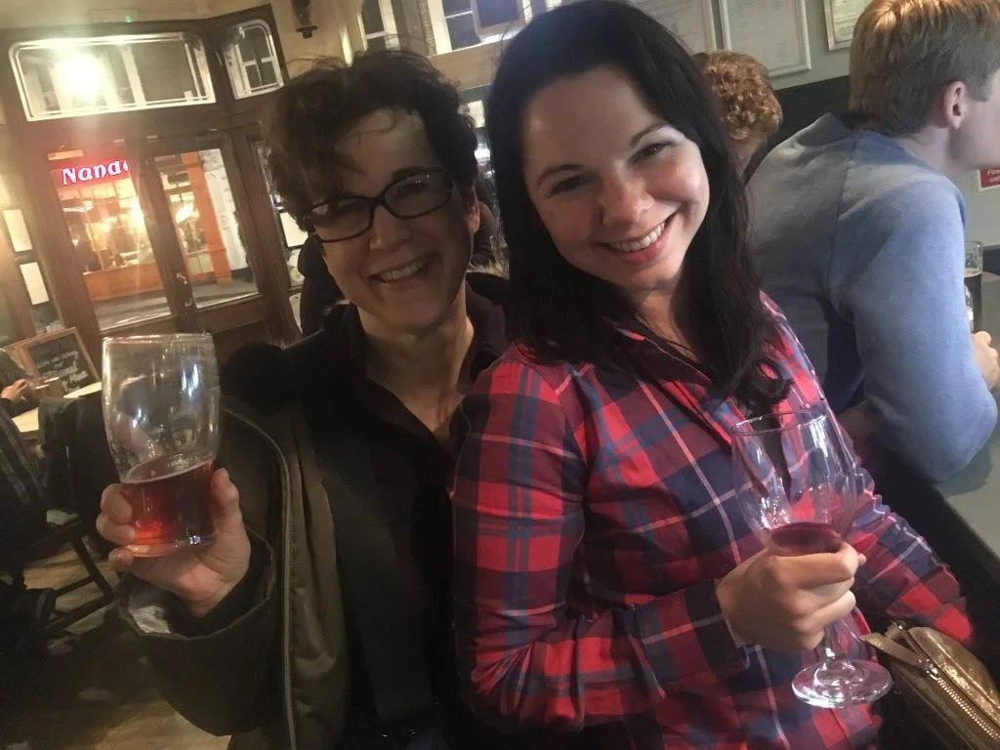
New Friends in London
I chose to fly into Biarritz, France, which is the closest airport to St. Jean Pied de Port, France. The flight was pretty uneventful, and I promptly found my suitcase that contained the majority of my Camino gear.
I had pre-booked a shuttle to St. Jean Pied de Port, and eventually located it. Apparently there were seven other people who were supposed to be in the Van with me, but for whatever reason there were eight there, one more than there were seat belts available for. Since nobody owned up to being in the Van without an official booking, the driver was forced to do a roll call with everyone's name. As it turns out, someone did indeed sneak on board the Van, hoping to get a free ride to St. Jean Pied de Port, France. Once that person was identified, they were politely asked to leave, which they did. As the side door of the shuttle slowly slid shut, I couldn't resist wishing "Buen Camino" to the sneaky guy we were leaving behind.
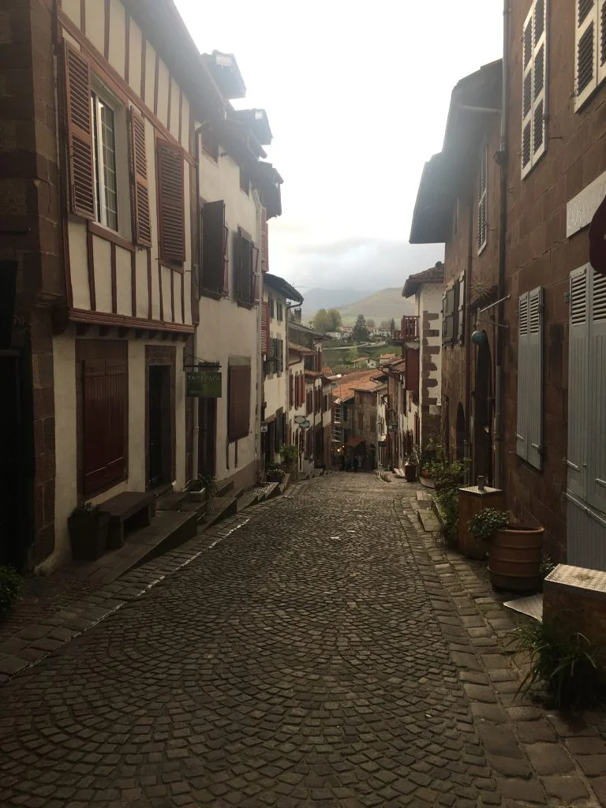
Arriving in St. Jean Pied de Port, France
An hour later we were all in St. Jean Pied to Port, France, a quant little town in France whose name literally means "St. Jean at the Foot of the Pass". I found my hotel and promptly checked in, then wandered down the street to find my first pilgrim's meal. Pretty much every establishment on the Camino offers some type of meal that caters to pilgrims, usually consisting of a starter, an entree, a desert and some wine. The establishment I found ended up providing one of the better meals of my entire Camino trip - vegetable soup, chicken with roasted potatoes, and a little chocolate desert.
After dinner I retreated to my room and spent the evening packing my backpack for the trip. When I went to sleep I had my suitcase (which I planned to ship to Santiago in the morning) all packed, and my backpack (which would contain everything I would wear for the next 35 days or so) waiting in the corner for the morning.
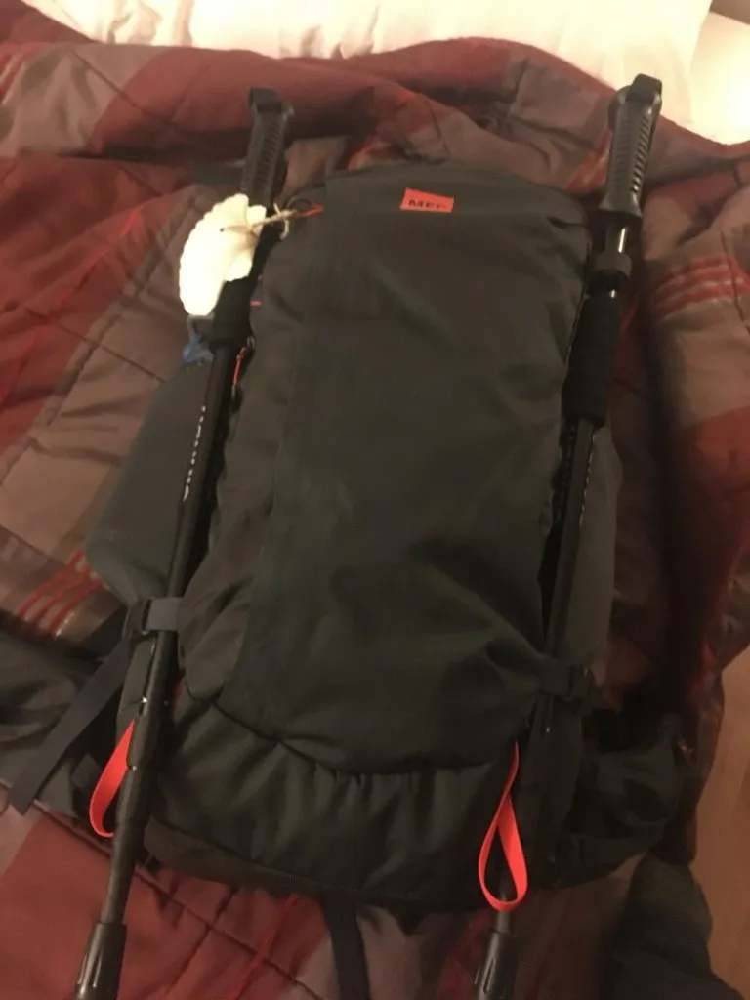
All packed and ready to go
Setting Out
I had my first real setback of the Camino first thing in the morning. I woke up relatively early, and went downstairs to settle up my bill. Nobody was at the front desk, and despite me ringing the little bell over and over, nobody was coming to my aid. Not only did I need to pay my bill, but I had arranged a company to pick up my suitcase and take it to Santiago for me, and needed to sort that out with the hotel.
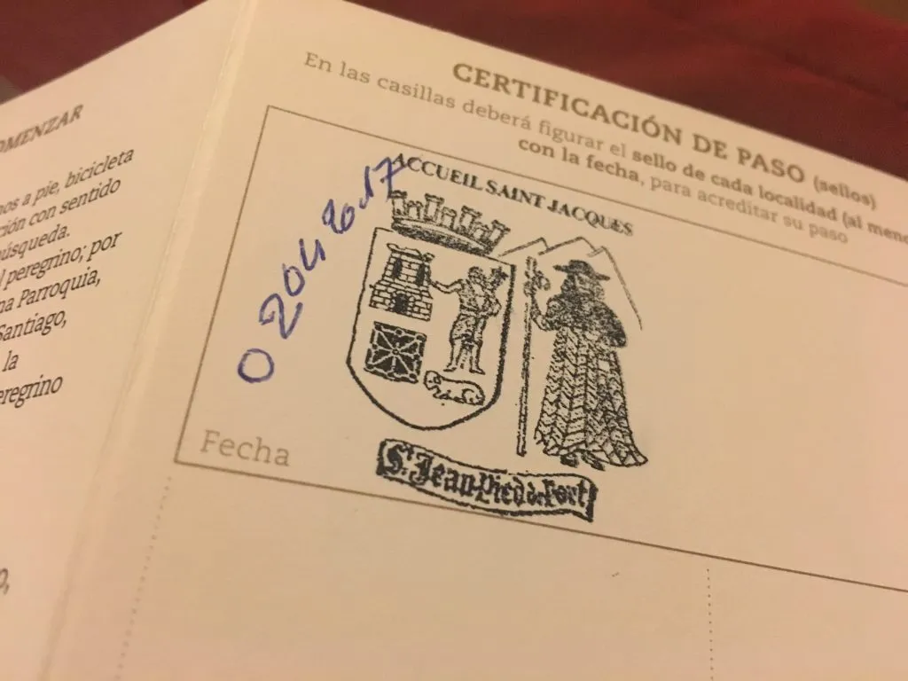
First stamp in St. Jean Pied de Port
I was starting to panic a little bit when eventually someone appeared to help me out. I paid my bill quickly, then asked the owner if they could keep my suitcase there until the shipping company (ShipMyBag) picked it up. He told me just to place it in the lobby and it would be fine. Since my suitcase contained my laptop and all my camera gear (probably about $8,000 worth of electronics), I didn't like that idea. I asked him if he could store my bag in a back room or somewhere more secure, but he declined to do any more for me.
The previous night I had seen an advertisement for another company that also shipped to Santiago, so I decided to go walk down and talk to them quickly. They were located beside the pilgrim's office, and for 70 euros would physically take my bag from me and ship it to Santiago. I was basically tossing the other 60 euros in the garbage that I had pre-paid for that other company to pick my bag up for me, but I wasn't willing to leave my suitcase in the lobby for a full day, so I just ate the extra cost in exchange for piece of mind.
I left before breakfast was ready in the hotel, but I was anxious to get started since today was going to be a long day. I figured in the worst case scenario I would have some food at Orisson, but hoped I would encounter something along the walk where I could get something to eat. Sure enough, about 5 minutes away from my hotel I encountered a beautiful bakery with fresh pain au chocolat, one of my favourite baked goods. I picked up one to go, and set off to cross the Pyrenees via the Napoleon route, which had apparently just opened - it was April 3, 2017.
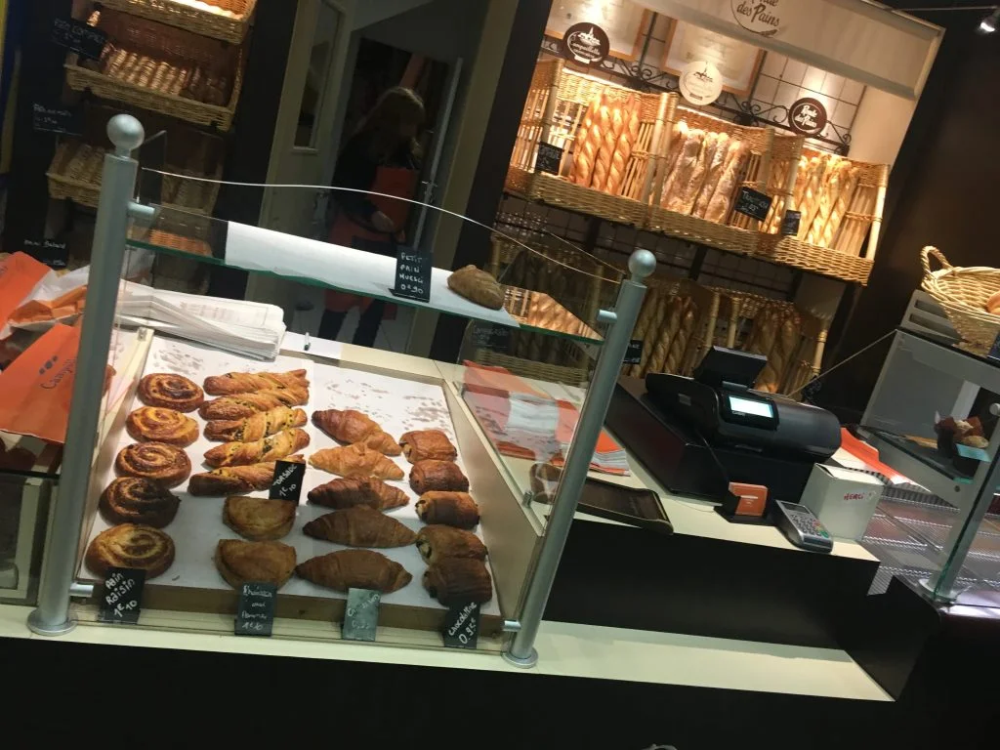
Early morning pastries before the ascent
Day 1 - St. Jean Pied de Port, France to Roncesvalles, Spain, 29km
There are two possible routes a person can take from St. Jean Pied de Port to Roncesvalles, Spain - the Valcarlos Route, or the Napoleon Route. The Napoleon route is the more difficult of the two as it involves a roughly 1200m elevation gain and as such is subject to more freakish weather. The Valcarlos route is open year round and only involves a 800m elevation gain, so many people opt to go that route even when the Napoleon route is open. I was determined to do the Napoleon route if it was open primarily because it was supposed to have some of the best scenery of the entire Camino. Luckily for me it was open (or at least the pilgrim's office said it would likely be open in the morning - after the fact I was told it was in fact closed, but if that were the case me and the other 100 pilgrims that took it apparently didn't get the memo that day).
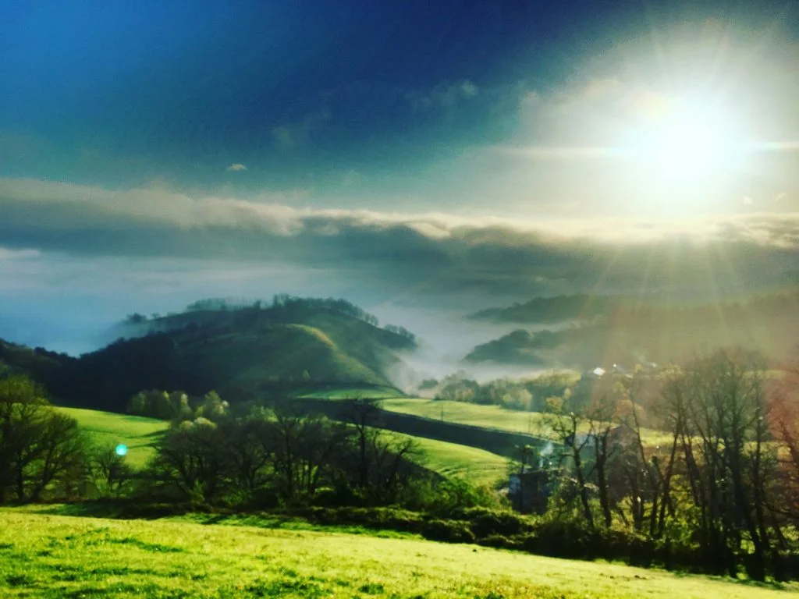
Climbing to Orisson
I knew that the climb today would be gruelling but it was even harder than I imagined. I knew at about the 800m elevation point was a stop called Orisson, and I kept waiting for it to magically appear in front of me. But it seemed like we were just endlessly climbing with no end in site. By the time I reached Orisson, I was completely exhausted. I remember at one point I took my rain jacket off and was promptly surrounded by steam from my sweat.
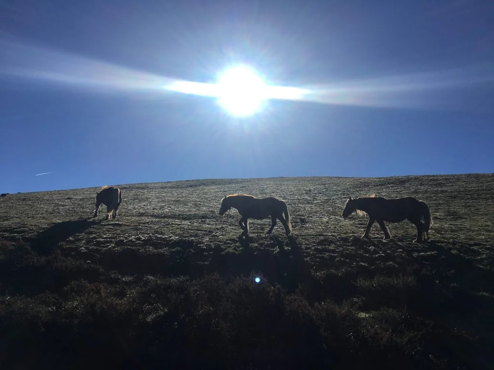
Horses on the Napoleon Route
Many people stop in Orisson for the night and do the second part of the Pyrenees crossing the next day. That hadn't been my plan, but I was out of steam. I asked at the counter if they had any rooms available, and amazingly enough they did (normally people reserve them far in advance). The lady told me that because the route is typically closed this time of year, they don't typically start taking reservations until mid-April. So basically if I wanted a room, I could have one.
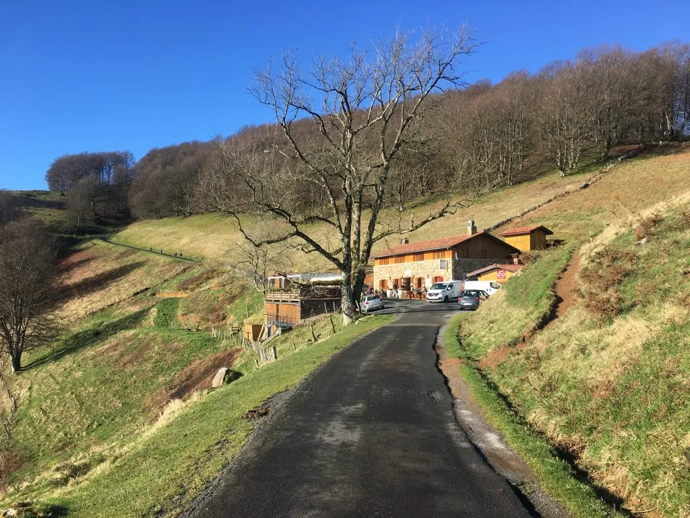
Arriving at Orrison
Not wanting to admit defeat so easily, I decided to take a rest and think it over. I purchased a coffee and my first bocadillo (a Spanish sandwich consisting of 99% bread and 1% fillings, quite popular amongst pilgrims and prisoners alike), then put my feet up and relaxed for a while. It was here that I made my first friend of the Camino, a dutch traveller named Anouk.
After about 30 minutes, I walked over to the water fountain and filled my bottle up. The coffee and food had reinvigorated me and I decided to push on for Roncesvalles. I tossed my backpack back on, grabbed my walking sticks and started the long climb again.
As it turns out, the worst was thankfully behind me, and the climb up to the peak was a lot more gradual. That's not to say it wasn't tiring as well, because it was, but I didn't really have much more difficulty that day, certainly nothing that the odd break couldn't take care of.
At some point during the climb I started feeling that my toes were rubbing in my shoes (never a good sign). Since I didn't want to start my first day with blisters, I made the decision to switch to my sandals for a while. My feet immediately thanked me, and I felt pretty bad-ass crossing the Pyrenees in some sandals. Unfortunately for me though I encountered snow at the top, and decided to just press on. What that meant is that my feet started to get cold, wet and moist. The cold didn't bother me, since eventually my feet got a little numb. But after a while I realized it was probably a mistake to continue on in my sandals, even though my feet were hurting. So I pulled out a fresh pair of socks, did my best to dry (and warm) my feet, and migrated back to my shoes.
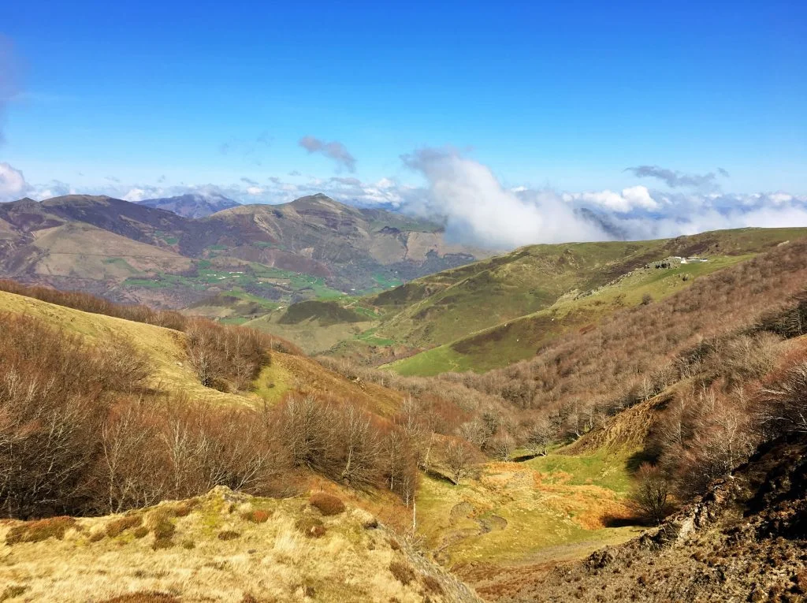
Near the top of the Napoleon Route
I walked with Anouk and another Italian guy for most of the day, making the crossing mid-day from France into Spain, and eventually made it to Roncesvalles sometime around 3pm I believe.
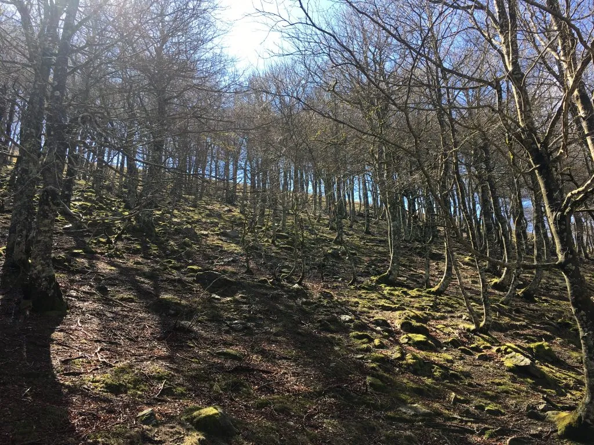
Final forest before Roncesvalles
My routine in the future would involve heading straight to an albergue to secure a bed for the night, but after the success of crossing the Pyrenees that day, I had the same idea as most other pilgrims in Roncesvalles - most of us headed straight to the bar and proceeded to have some celebratory beers.
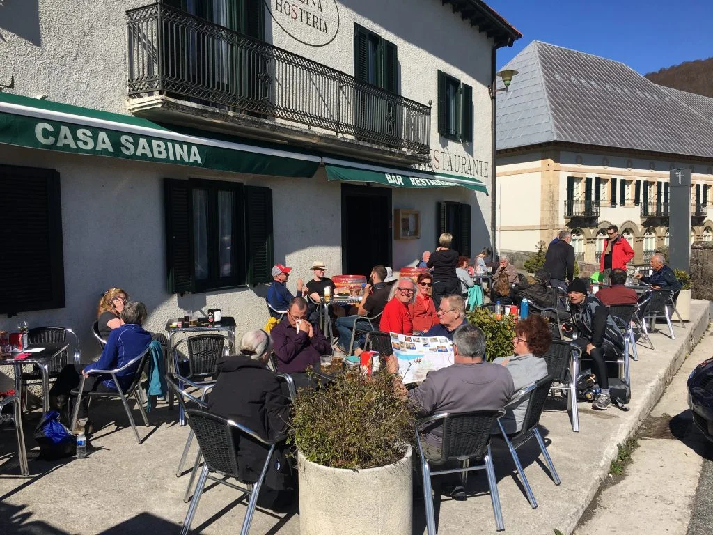
Celebratory Beers
Looking back it was such a great feeling, and all of us were sharing it - the scenery we had seen had been spectacular, the climb was draining, the weather was amazing (about 25C), and we had all managed to do it. I remember stopping at one point to just look around and take it all in - the blue skies, the pilgrims I had just met, a table full of empty glasses - this is what I had hoped it would be.
Albergues
Albergues are essentially hostels but they are only available to pilgrims travelling to Santiago (or at least, that's how it's supposed to work - more on this later). For roughly 10 euros, you'll receive a bed in a room with roughly 10 other pilgrims, a hot (or often warm) shower, and with luck somewhere to do your laundry. In better albergues you'll often have the option for a shared pilgrim meal (highly recommended if you do), and if not, can usually find something similar in town. To obtain access to an albergue, a person needs to present their pilgrim credencial and typically will have it stamped (to prove they were here).
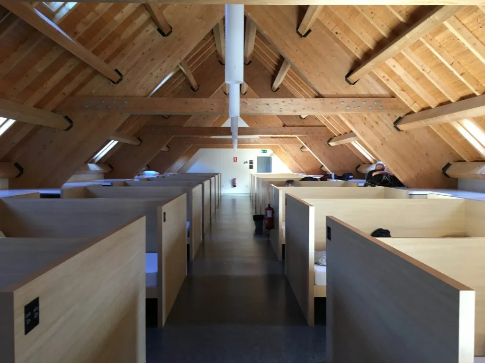
The albergue at Roncesvalles
Looking back most albergues sort of blur together in my head. A few stand out, such as the one I stayed in for my first night in Roncesvalles, as well as another one in Hornillos that served a 12 person paella. But in general the albergues were all fairly similar, and often the best part of the experience was having the opportunity to socialize with other pilgrims, usually over a few beers or glasses of wine.
During my trip I varied where I stayed quite often. I stayed in a few donativo albergues during my trip (which are by donation only, and often run by a local church), quite a few private albergues, and the occasional hostel or hotel when I felt like I was falling behind on sleep. I had one of my best meals in a donativo albergue - a stew shared between about 20 people along with some singing. I also had one of my worst experiences in that I was staying with a few seedy characters that were clearly using the donativo albergues as a way to save costs - one individual was actually kicked out late at night because he was rude at dinner and clearly intoxicated. If you stay in a donativo, please do your part and leave a reasonable amount to cover costs, more if you can afford it. Donation only doesn't mean free, something many people apparently don't know or don't care to know.
There's mostly an unspoken etiquette in the albergues that most people inherently know and respect, but occasionally you meet the odd person who doesn't (I'm looking directly at you Italian guys). For example, you don't turn the lights on in the room when other people are sleeping, nor do you make a pile of noise or try to have a conversation - go out into the main room for that. You don't make your bed at 11pm after you've been at the bar all day, you do it early in the afternoon when you arrive. If you need to charge your phone, you find an outlet that isn't being used, you don't unplug someone else's phone and put yours in (this happened to me once).
I was in one albergue, fast asleep, when a group of Italian guys came in at 11pm, turned on all the lights, then proceeded to make their beds while having a conversation. They woke four of us up during this drunken debacle, but seemed completely oblivious to it all (or rather, they knew they were being rude but didn't care). The polite Canadian in me just closed my eyes and remembered patience was part of my personal Camino, but I certainly wasn't happy about these guys (one of which thought he was God's gift to women and kept asking people all day to tell him how good he looked). At 6am the next morning, one of the Italian guys got up and immediately turned on all the lights, waking everyone up again. I was pretty much stirring already, but several of the ladies in the room were fuming angry because they were exhausted, and I didn't blame them.
I figured I would never see these guys again, so I resigned myself just to move on. But when I saw the one guy having breakfast and the ladies from my room with bags under their eyes, I decided I need to speak up. I told him what he did was rude and that he woke everyone up. He didn't care. He basically just waved his hands at me and walked away, which is basically the response I figured I would have. Regardless, I'm glad I said something because he was being a rude asshole, and everyone in the room agreed.
Day 2 - Roncesvalles to Zubiri, 22.1km
It's pretty hard to sleep in when you are staying in a room with approximately 100 people, which was the case in the epic Roncesvalles albergue. As such, most of us were up around 6am and starting to get ready. It's pretty rare that someone showers in the morning, mostly because the bathrooms are pretty busy then, but also because it's a bad idea to walk long distances with moist feet. I got into the routine of basically sleeping in the clothes I was going to wear in the morning, so my morning routine mostly consisted of stuffing my sleeping bag, packing my backpack, brushing my teeth, filling my water bottle, and then setting off.
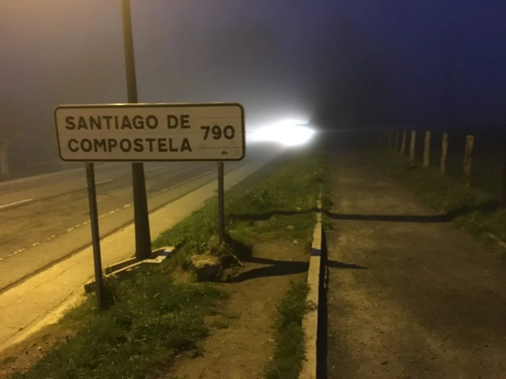
Setting out from Roncesvalles, only 790km to go!
If there was a nice looking pub (a generic name for even a café along the Camino) that was open, I would often grab a coffee with a croissant before setting off. But often I would walk to the next town (usually 60-90 minutes away) and merge my first break of the day with breakfast.
I decided to walk with Anouk and a few other people this day, and we set off around 7am. It was a bit cold and rainy in the morning, so my rain jacket came in handy, for at least the first hour or so. The scenery was really great this day, and we passed by many little quaint villages. At one point we stopped for a break on the side of the trail and just took it all in.
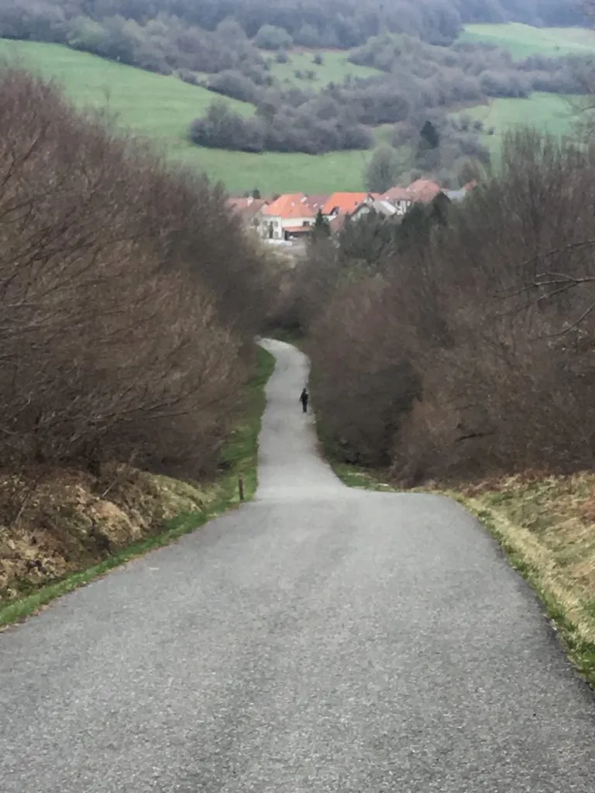
A day of descents
Unfortunately for me about half-way through the day my two pinky toes started to hurt. I kept pushing on, hoping I could just put it out of my mind, but after a while I had to start limping to avoid the pain and figured I should stop to deal with it. Once I took my shoes off, I discovered that I had two really ugly blisters, one on each pinky toe. These two blisters would continue to plague me for the duration of my Camino, and it was here where I first started the process of battling them with a sterilized needle. Ultimately I learned that my hiking shoes were a little too small for my feet (especially after they started to swell), and also that I seem to step on my two pinky toes slightly when I walk (look out Quasimodo).
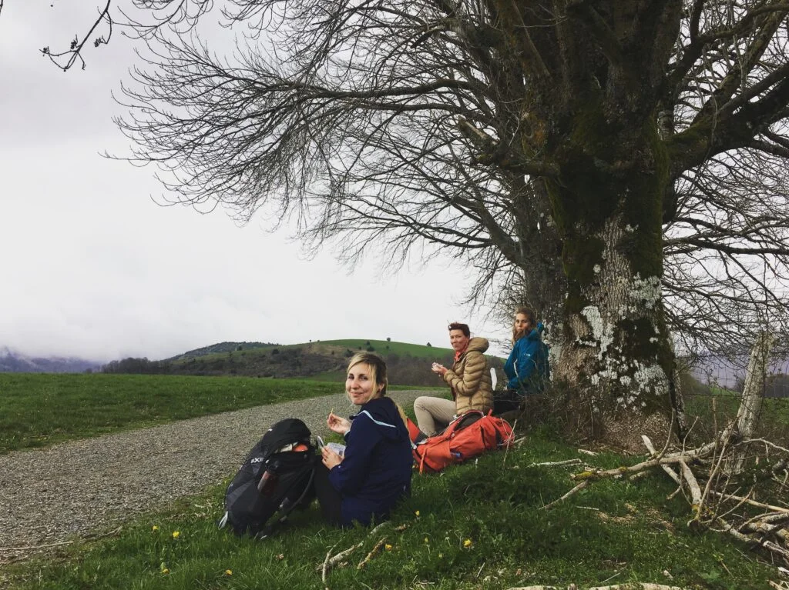
A cold lunch break
I limped on slowly, trying to make my way to a little town called Zubiri. Due to the blisters and the rather steep descents, my knees started to hurt. This was something I had been really worried about previously since I had hurt my knee years ago hiking the West Coast Trail in British Columbia, Canada. I brought along a knee brace, and had been wearing it, but it seemed that the injury finally caught up with me.
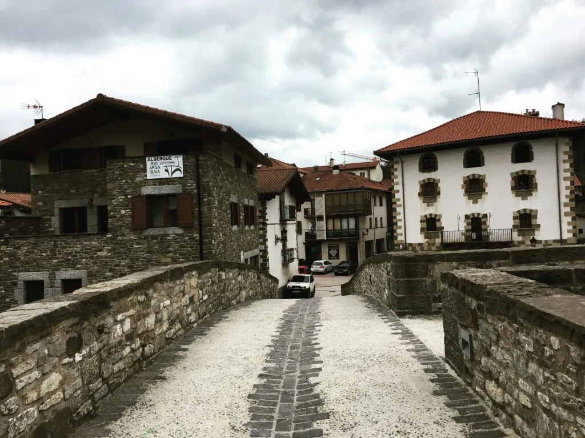
Limping into Zubiri
The rest of the day was a real gruel, and by the time I reached Zubiri I could hardly walk. I checked myself into the first albergue I found on my right, and secured a bunk bed in a room with seven other people. I had a quick shower, changed into a pair of shorts, and managed to get a load of laundry underway with the owner of the albergue. I limped across the street to a cool little pub and ordered myself the holy trifecta of beer, bocadillo, and coffee.
When I got back to the albergue after lunch, I was in quite a bit of pain still. While doing introductions amongst some of my bunk mates, I learned of someone else in similar pain, a young lady in the adjoining room named Elle. Elle's knee had really bothered her today as well, but she managed to secure a big score of ibuprofen from the local pharmacy. After her and I met, she was nice enough to give me a few to tide me over until I could grab some myself from the pharmacy.
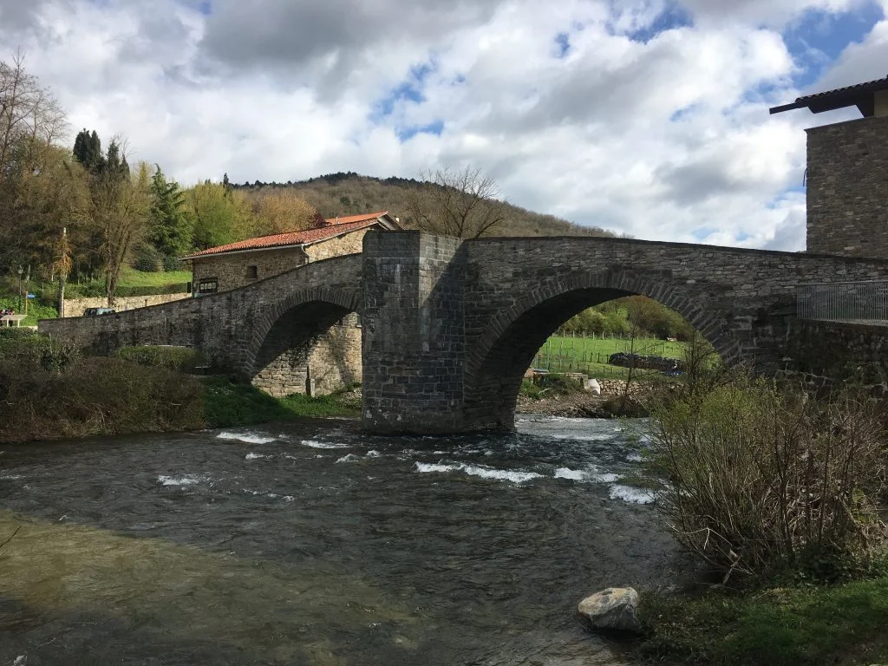
Zubiri bridge
I did some self-medicating at the local pub during the evening, and met up with a few new friends I had met the night before in Roncesvalles. Looking back, despite being in a lot of pain, I had a really great time that night and had beers with a great group of Koreans, an Argentine, and a few Germans.
Eventually I hit the albergue and tried to get some sleep, knowing that the next day would be make or break in terms of pain. I took a few ibuprofen before bed hoping it would relieve the inflammation in my knee overnight and then closed my eyes.
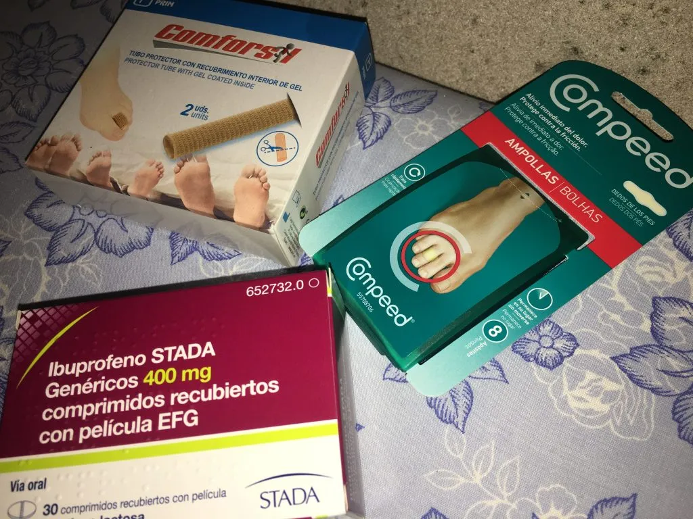
Ibuprofen and compeed
Day 3 - Zubiri to Pamplona, 21km (of hell)
I was awoken shortly before 6am by a German couple who were packing up and getting ready to head out. My original plan was to sleep until about 7am, but since I was up I decided to just pack up and get going. I brought along a little LED headlamp in my backpack, and I figured it would be a good opportunity to test it out.
I took my backpack out into the common area and finished packing so I wouldn't disturb the other sleepers, and quickly downed a rather bruised apple to tide me over until breakfast. Elle was up early too, and we chatted briefly before I set out into the darkness. I was sore in general, but I didn't have any stabbing pain in my knee, which I hoped was a good sign. I was really hoping at this point that my knee wouldn't bother me today, because the pain was enough the day before that I really thought I may have to toss in the towel and quit.
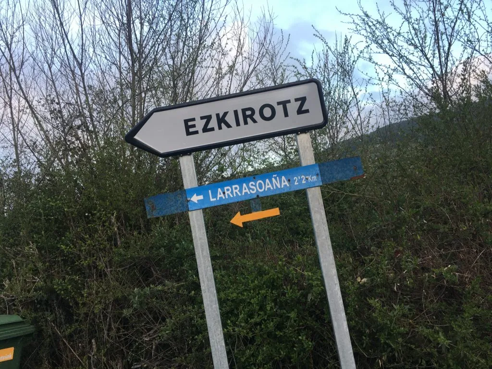
Heading towards Larrasoaña
Sure enough, after about 10 minutes of walking down the dimly lit trail my left knee started to flare up again. I remember thinking "oh fuck" as soon as I felt it, because I needed to walk about 20 kilometres still before getting to Pamplona and being able to rest. There were a lot of downhill portions leaving Zubiri, and the pain got so intense at one point that I literally needed to walk backwards down some of the hills to relieve the pressure on my knee.
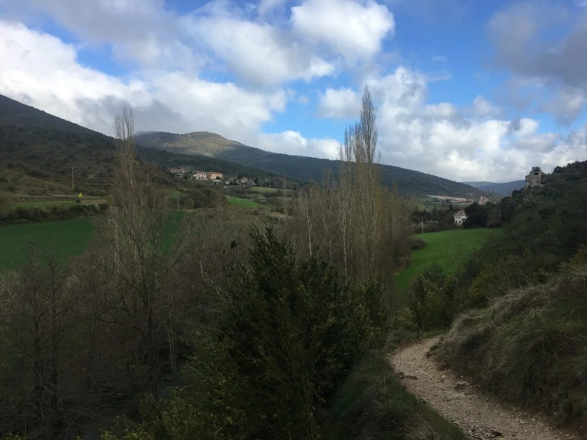
Despite being in pain, today was scenic and enjoyable
As the day went on, my other knee started burning as well, a result of me naturally trying to take pressure off the other knee. I figured I was pretty much screwed at this point, and honestly wondered if I would have to call it quits after today. The upside at least was that I knew I was going to take the next day off since I had to wait for my friend Scott to arrive in Pamplona. But I'll admit, I was really worried at this point that I wasn't going to complete the journey.
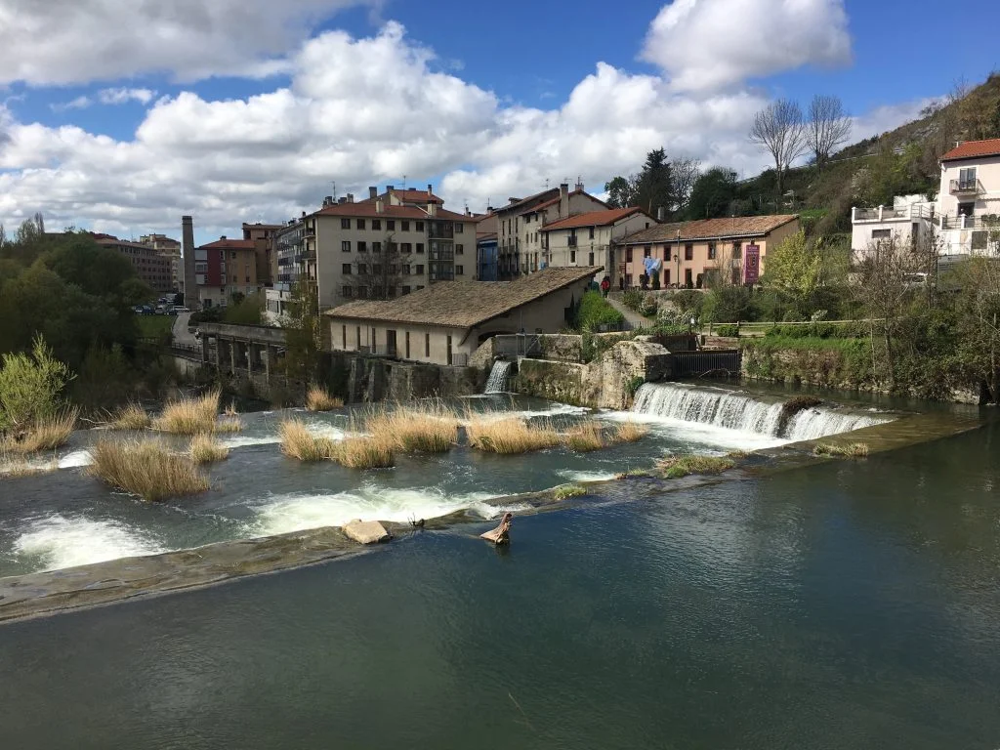
Brief stop before Pamplona
Eventually the trail levelled out, which gave my knees a welcome break. Despite being in a lot of pain, the second half of the day was really pretty, and the weather was warm enough that I ended up in only my t-shirt in the early afternoon.
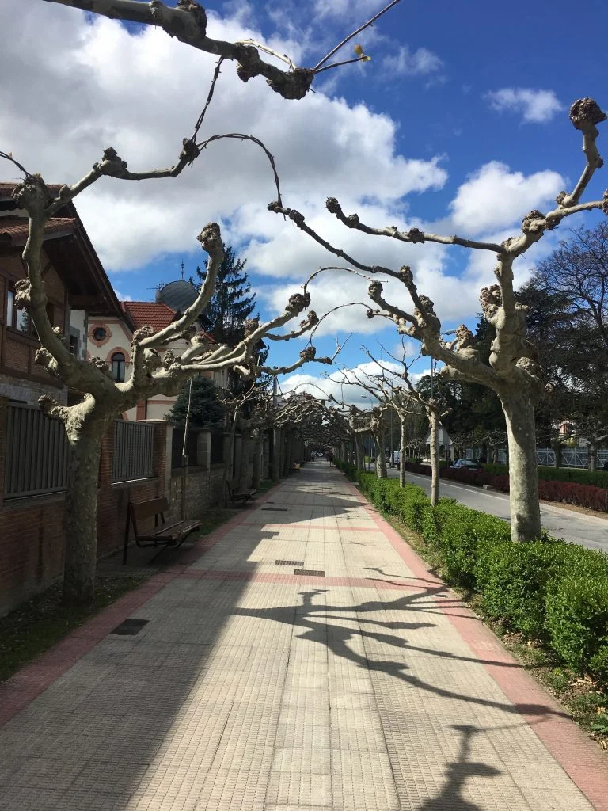
Walking into Pamplona
At some point early in the day, cookie-powered Elle blasted by me on the trail, apparently doing much better than I was. We would pass each other back and forth a few times over the trail, eventually meeting up again right before Pamplona and walking into the city together. Her and I ended up hanging out in the afternoon in Pamplona, treating ourselves to a few drinks at various pubs, and working on eating the roughly five pounds of food that Elle had in her backpack.
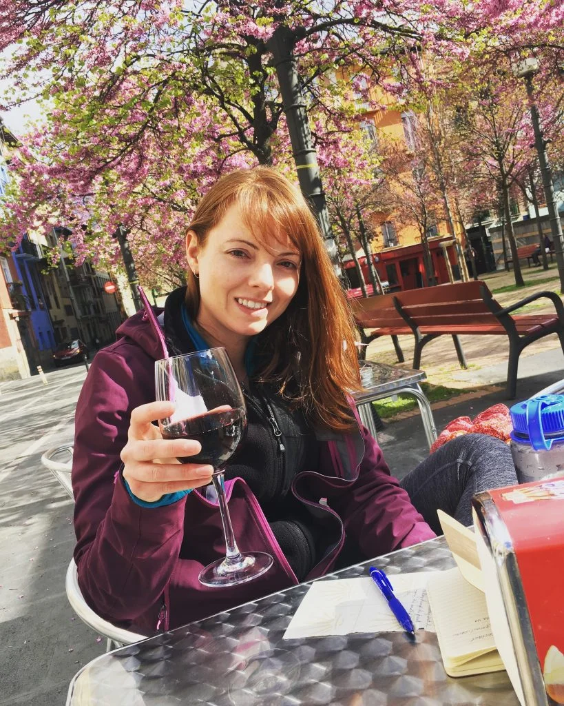
Wine 'o clock with Elle
While I stayed in a nice albergue that night, I planned to move to a hotel the next day and try to let me knees rest a bit. In the morning I packed up, gave Elle a goodbye hug (since she was carrying on, and I wasn't), and then set out to do a bit of exploring.
Day 4 - Rest Day
Since Scott was purposefully flying in from South Africa for my birthday, I decided I would splurge and stay in a hotel this night. When I left the albergue in the morning, I ran into an American guy I had met the day before and him and I just chilled out and drank probably four coffees each in a café. While I did some exploring of the city at night, I mostly just relaxed at the hotel and did my best to give my knees a break. Scott arrived late at night in Pamplona, and we made plans via WhatsApp to meet in the morning near my hotel.
I did my best to get a nice sleep in the hotel and rest my knees, and really hoped I wouldn't fall apart on the trail as soon as Scott and I set out again in the morning.
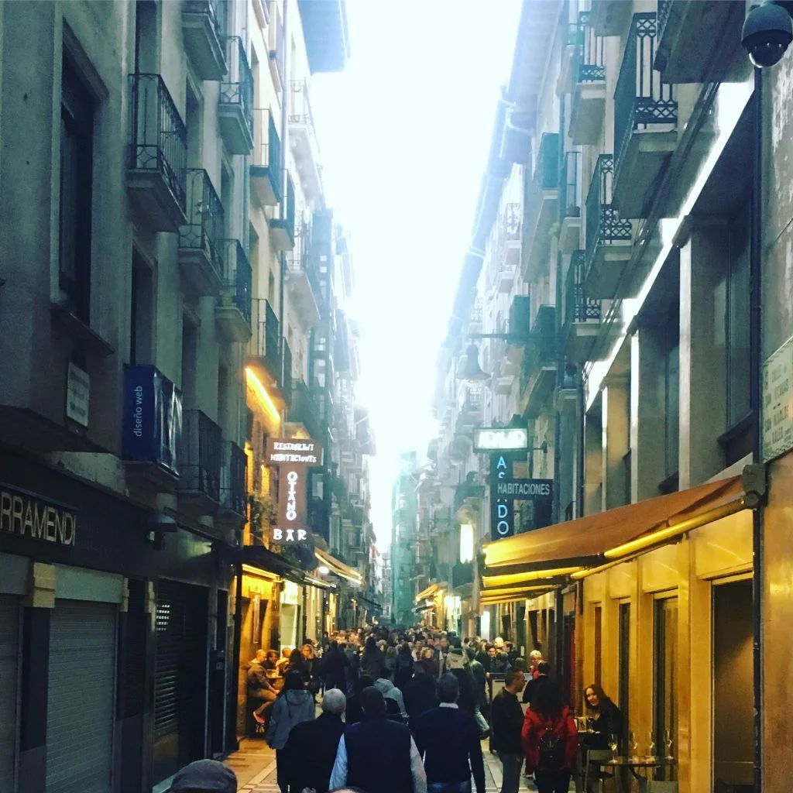
Pamplona at Night
Day 5 - Pamplona to Puente de Reina, 24.5km
Scott met me in the hotel café around 8am, and we set off together for Puente de Reina. The first part of the journey involved passing through a little city called Cizor Minor, and then climbing roughly 300 metres to Alto de Perdon, which contains a famous sculpture on the Camino.
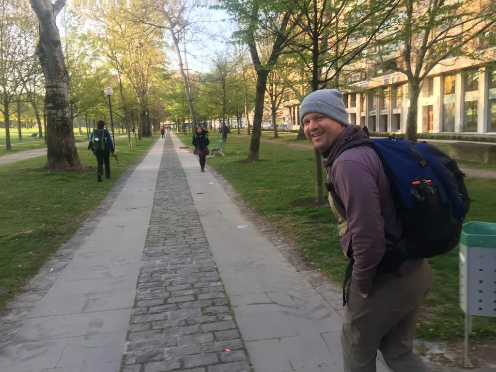
Scott's first day of walking
Compared to the climb through the Pyrenees, I didn't really have any issues today with the climb. My knees were definitely bothering me a bit, especially with the descent down from Alto de Perdon, but the pain was at least manageable (it probably helped in part to the Ibuprofen that I was taking).
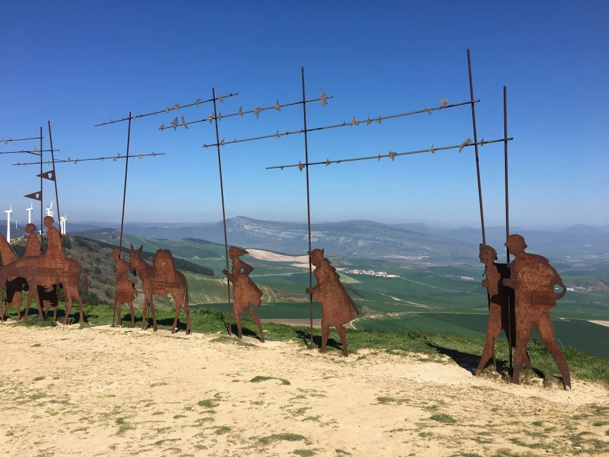
Alto de Perdon
I had started developing a few new blisters today, one on the bottom of each foot. This is a really crappy location to get a blister since you are forced to put a lot pressure on it with each step. I treated them after my shower in the albergue and put some Compeed on them (more on the evilness that is Compeed later) for the rest of the evening.
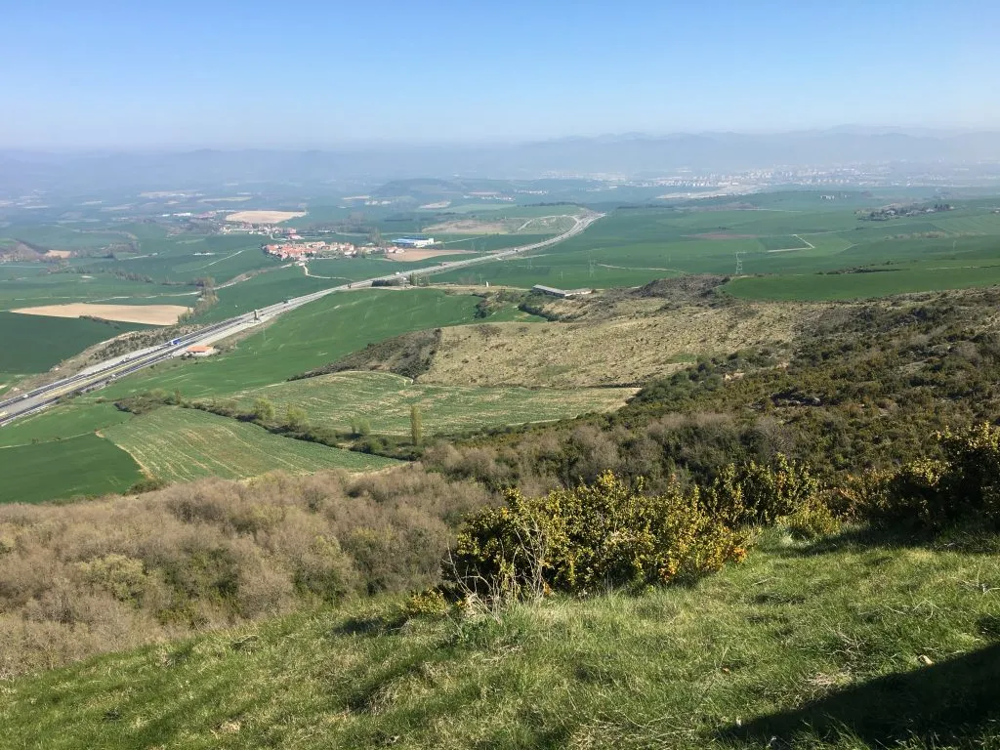
A day of great scenery
Scott and I went across the street to the supermarket and picked up twelve warm beers (it was my birthday after all), and all the fixings to make some nice bocadillos in the albergue kitchen. We spent the afternoon on the patio drinking beers and chatting with fellow pilgrims. Anouk showed up at some point too (which was a nice reunion since we lost each other on day 2), and joined us for a beer and some dinner in the evening.
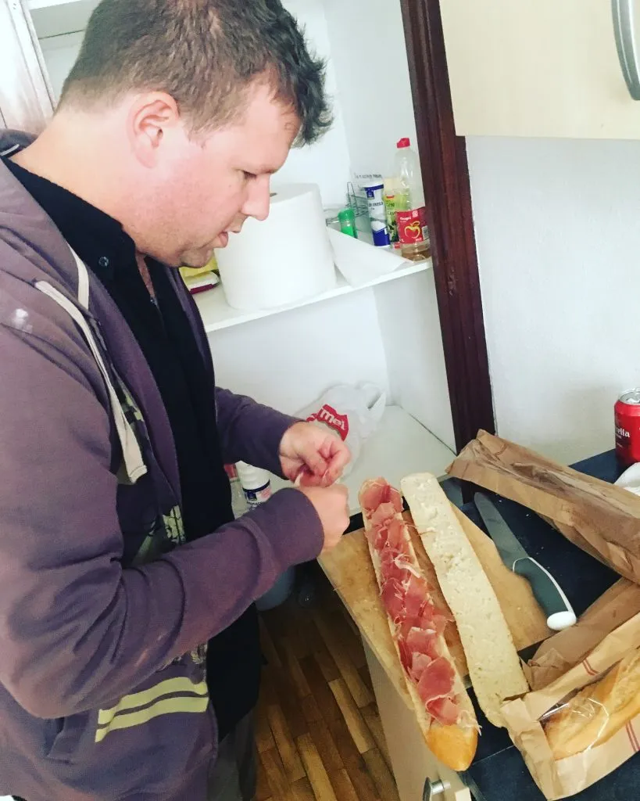
Scott making bocadillos
At some point (i.e. when the beer ran out) Scott and I decided to migrate to a local pub to continue the celebrations. We found a quaint little spot close to the albergue and proceeded to drink copious amounts of beer and sample some Spanish tapas (chorizo and papas fritas, Scott's favourite). All in all it was a really fun birthday, and it was great to catch up with Scott and reminisce about our first shared day on the Camino.
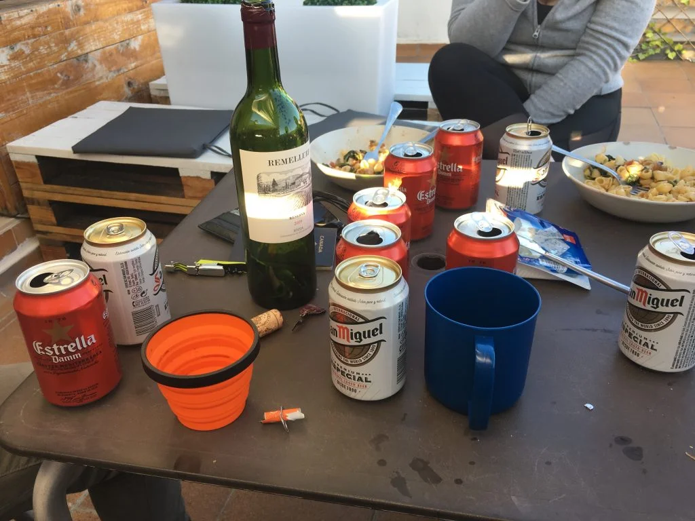
Birthday beers
Day 6 - Puente de Reina to Estella, 22.3km
I woke up in the morning with a pretty significant hangover, but that was pretty much a given after we downed the first twelve beers. Due to space limitations in the albergue, Scott had ended up in another room. When we woke up, we coordinated a departure via WhatsApp and eventually set out.
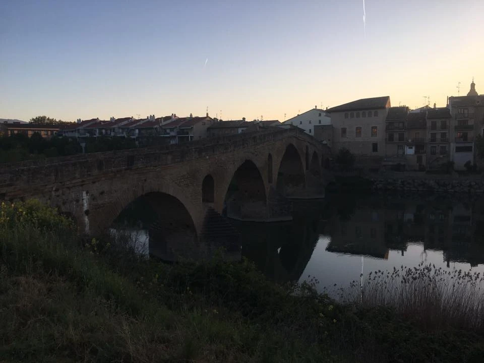
Leaving Puente de Reina
My knees were much better at this stage, but my feet were getting progressively worse. I had a pretty consistent routine at this point that involved wearing my hiking shoes for a few hours, eventually switching to my sandals later in the day. While the sandals spared my toes any more injury, they seemed to cause more damage to the soles of my feet. So I ended up making footwear decisions based on what part of my feet were hurting the most as I walked - not a very fun period of time.
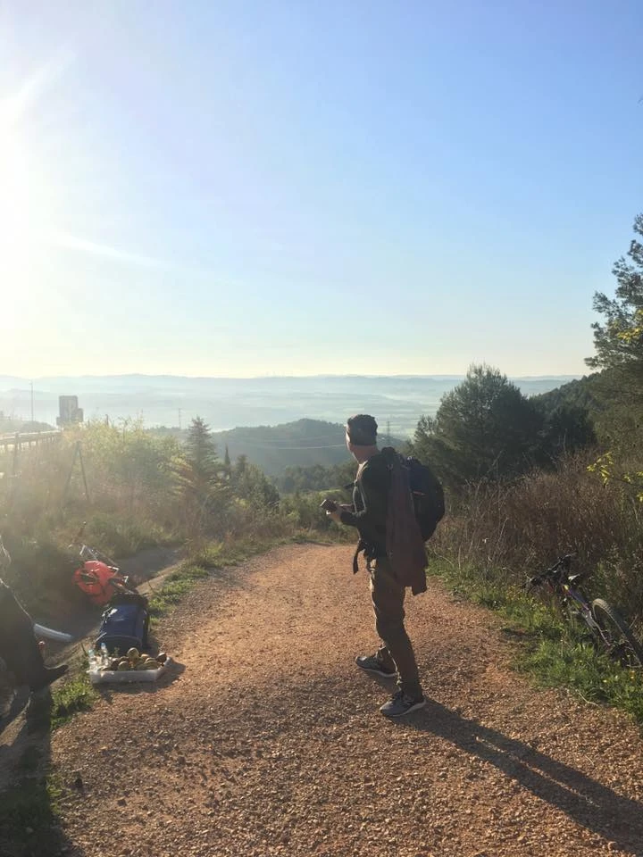
Scott looking back down the trail
I remember one time that Scott and I stopped to have breakfast - I took my shoes and socks off while Scott went inside to buy the food. I looked up at this point and noticed some Japanese tourists pointing at my feet, after which they got up and started taking photos of them. I thought it was rather amusing, but it also underscored just how screwed up they must be looking if other people thought they were worthy of photos.
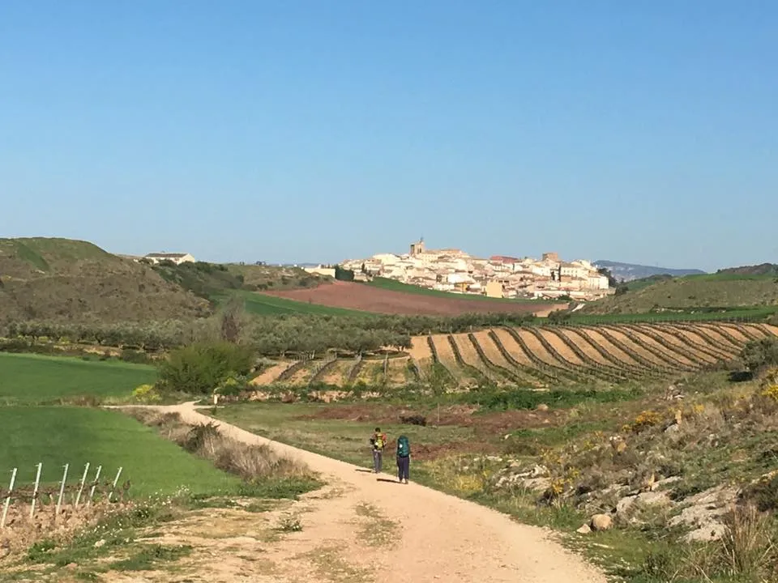
Walking
A few days prior I had come to the realization that my shoes (which were the right size when my feet weren't swollen) were unfortunately too small for my feet. This was causing my two pinky toes to curl under the adjacent toes, forcing me to put pressure on them with each step. In addition, my decision to walk with sandals through the snow on day 1 ended up being a stupid one - the bottoms of my feet had gotten really wet, and some of the skin had sort of sheared loose. My plan at this point was to reach Logroño and buy some new shoes and some better socks. It's obviously really risky buying new shoes in the middle of an 800km trek, but I really had no choice at this point.
Scott and I made it to Estella that night, which was a cute little town. We had one of the better meals on the Camino then - a couple of thin crust wood-fired pizzas in an Italian pizzeria close to the albergue, complete with wine.
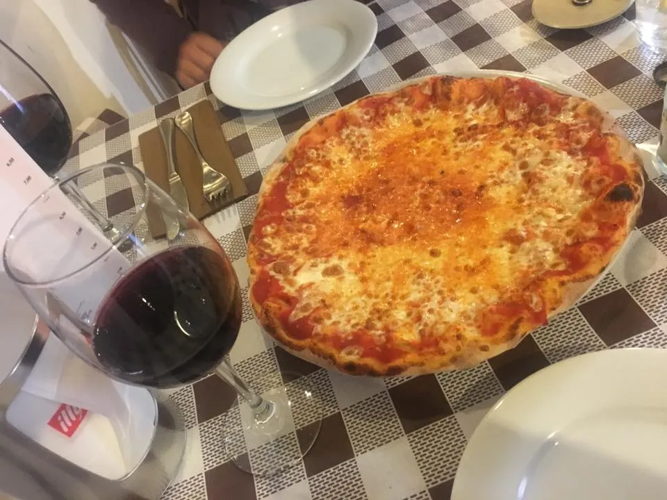
Pizza and wine with Scott
We met a German guy named Sven in the albergue who we would continue to run into over the course of the walk. Scott tried to be a nice guy and told Sven that he was welcome to use Scott's USB charger (which had two ports). Sven calmly replied that his German charger had five full ports, and we were welcome to use his (the sound of a gauntlet hitting the floor could be heard throughout the albergue) - we liked him immediately at this stage.
Day 7 - Estella to Los Arcos, 21.6km
The next day we set out for for a town called Los Arcos. My feet had been getting progressively worse, and I decided I really needed another rest day to take care of them. I remember looking down at my feet during the day only to notice some puss leaking out the side of my pinky toe - not a good sign.
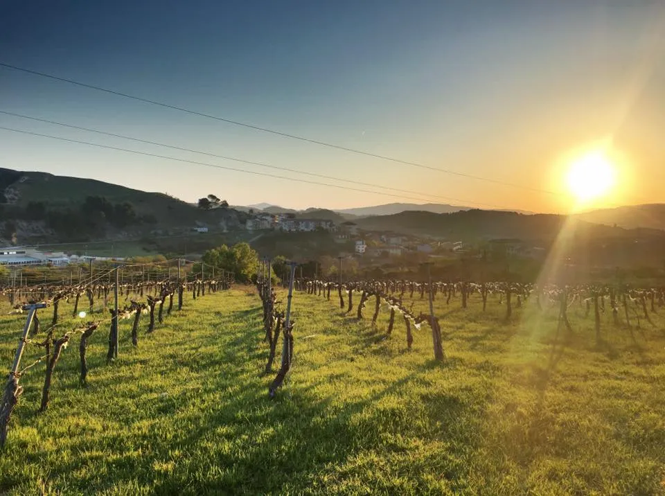
Sunrise just outside of Estella
At some point during the day we stopped at the famous Bodegas Irache fountain, a fountain that literally pours wine. Unfortunately for us, the fountain was completely empty when we arrived. We heard from others on the trail that it wasn't really worth drinking, but it would have been nice to at least sample it.
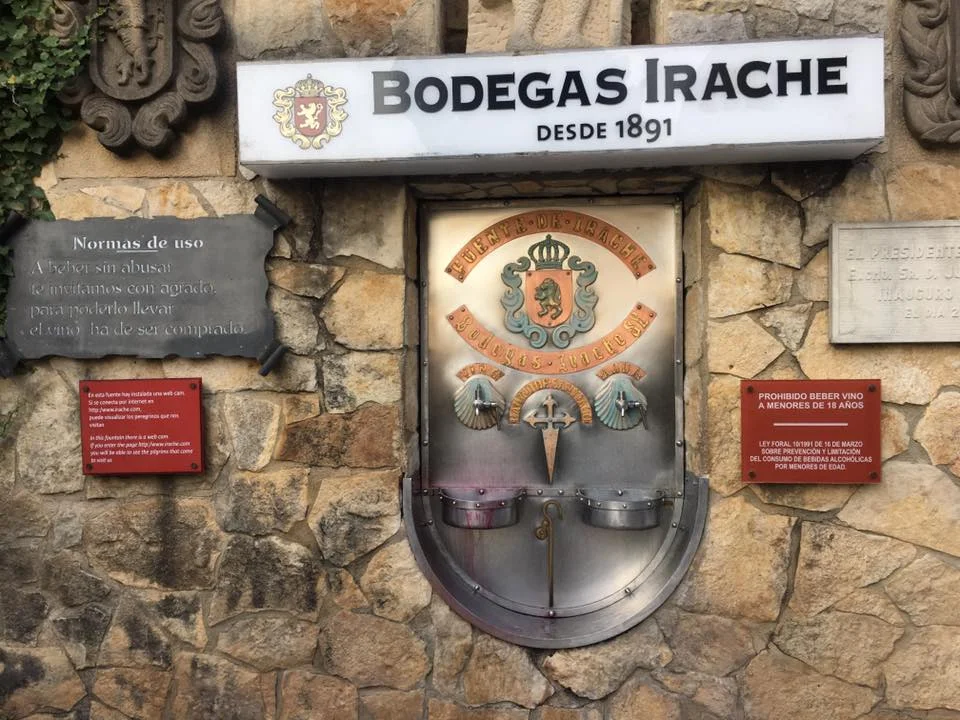
The fountain of wine
We found an albergue run by a German women (one advantage being that she kept the fridge stocked with German beer), and ended up scoring a full room to ourselves.
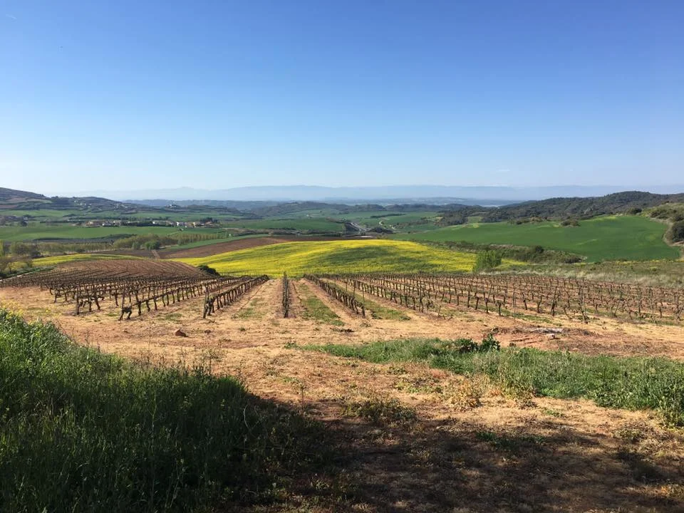
Vineyards outside of Los Arcos
Scott and I sat outside on the patio and drank German beer throughout the afternoon, occasionally chatting with fellow pilgrims. We walked down to the plaza in the evening and shared one of the rather generic paellas that were offered in various establishments on the Camino.
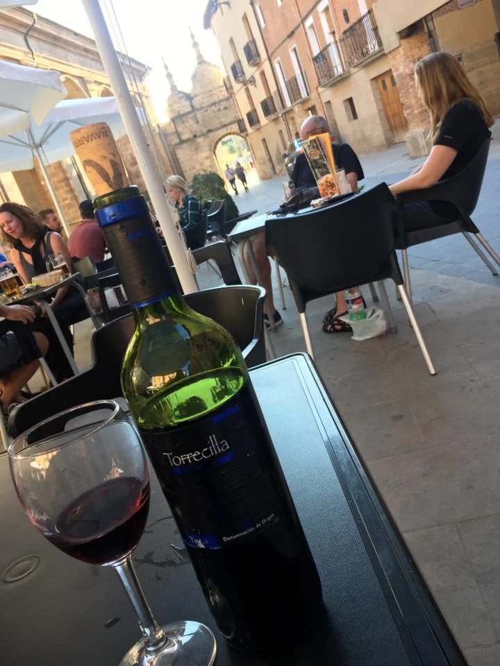
Some more wine in the plaza in Los Arcos
Day 8 - Rest day in Los Arcos
The next day Scott and I decided just to stay in Los Acros and rest. While I was hurting more than Scott, he had managed to get a sore knee and some blisters as well, which in truth made me exceptionally happy since I was no longer the only person in pain on this trip. We couldn't check into the albergue until 1pm I believe, so Scott and I just chilled out in the main square and sat in the sunshine.
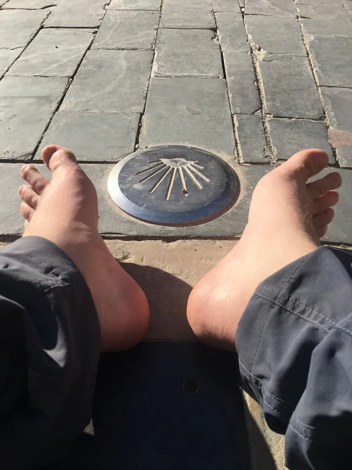
Resting my feet near the Camino marker in the Los Arcos plaza
At one point someone on their bicycle passed me and asked how the Camino was going. I told him about my feet and how I was struggling a bit. He then proceeded to complain about how hard it was on a bicycle. I was like, are you fucking kidding me? Look at my feet! You will be done in what, a week? I certainly had more empathy at the end of my pilgrimage for everyone on the trail, but I had absolutely zero empathy for that guy in his shiny spandex with pristine feet at that point.
In the albergue that night we met two Australians from Melbourne that we eventually would hit it off with - Julie and Dimitri. I remember one cute moment where Julie needed help getting off the top bunk and Dimitri picked her up and helped her down. I thought about asking Dimitri to help me and Scott down as well, but it seemed premature at this point.
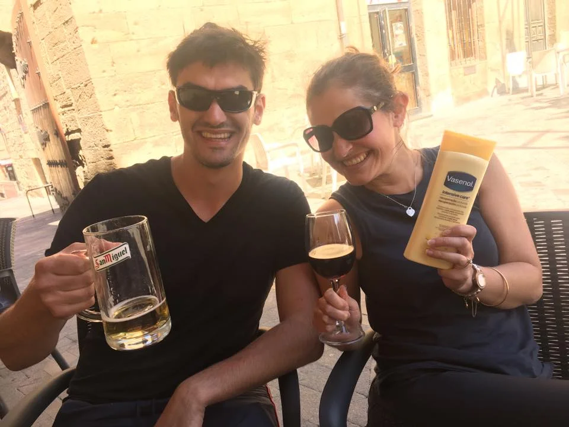
Julie and Dimitri
I was a bit of a party pooper that night, primarily because I didn't want to be walking on my feet. I mostly stayed in bed and read on my Kindle while Scott went out and did a bit of work on his laptop. I was hoping to get a good rest and be in better shape in the morning to start walking again.
Despite being in pain, it's actually very hard to force yourself to take a rest day on the Camino. It's a very weird thing to wake up in the morning and watch everyone else start walking without you. In addition, you're pretty much guaranteed to lose contact with anyone you had been walking with up until this point - unless they take a day off at some point, they will probably continue to be a full day ahead of you until the end.
But sometimes you have to just listen to your body.
Day 9 - Los Arcos to Viana, 18.7km
Scott and I said goodbye to Julie and Dimitri and headed out in the morning. It was still relatively early, so we managed to catch the tail end of the sunrise after leaving Los Arcos.
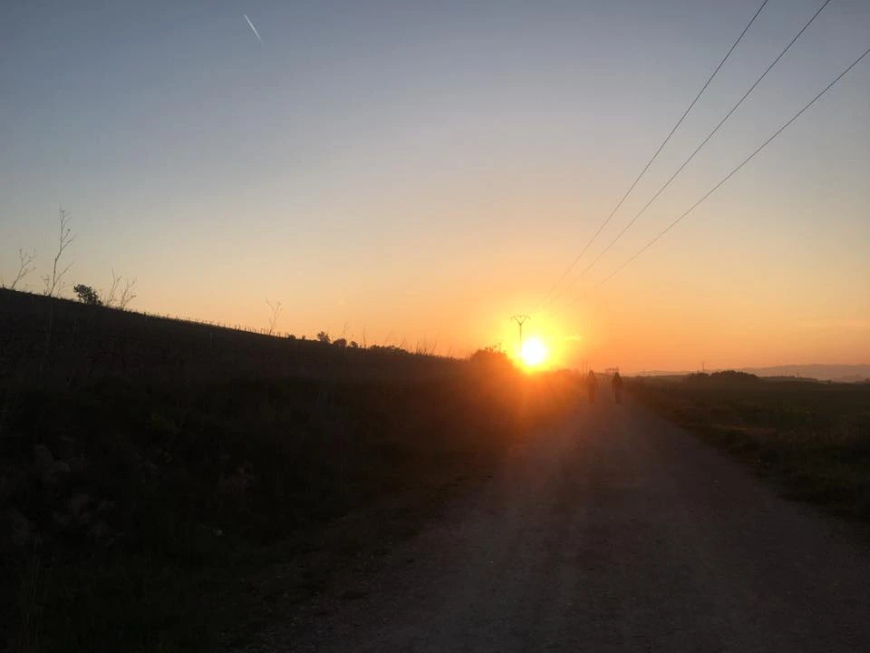
Sunrise after leaving Los Arcos
The trail alternated between paved sections and dirt that stretched along the rolling hillsides in a few places.
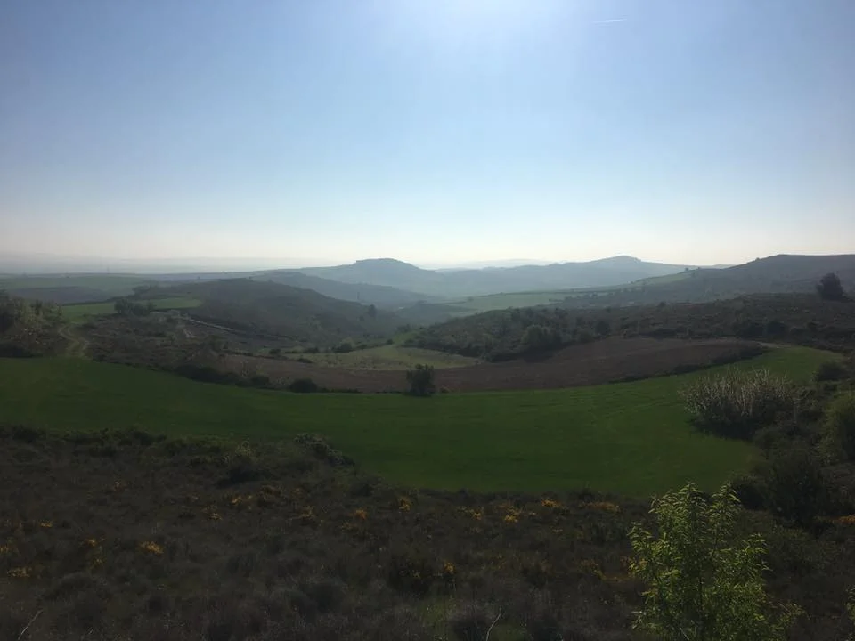
Rolling hills
Eventually we saw Viana in the distance, and decided we would stop there for the night. While some people plan their evening destinations far in advance, mostly I just listened to my body and stopped when I was getting sore or tired. I would often have a goal in mind based on what I read in the guidebooks, but I would say I only ended up there 60% of the time, and just stopped where it felt right the other 40% of the time.
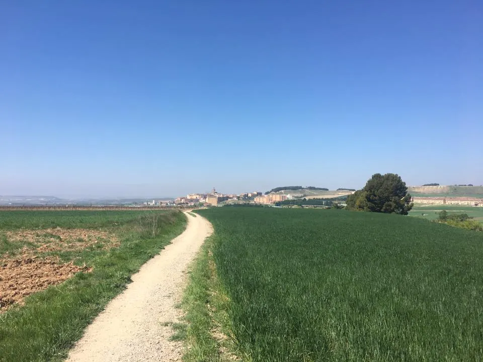
The trail leading into Viana
When we arrived in Viana, we grabbed an albergue and set out to find something to eat. And wouldn't you know it, we ran into Julie and Dimitri again so we teamed up for a Camino meal together.
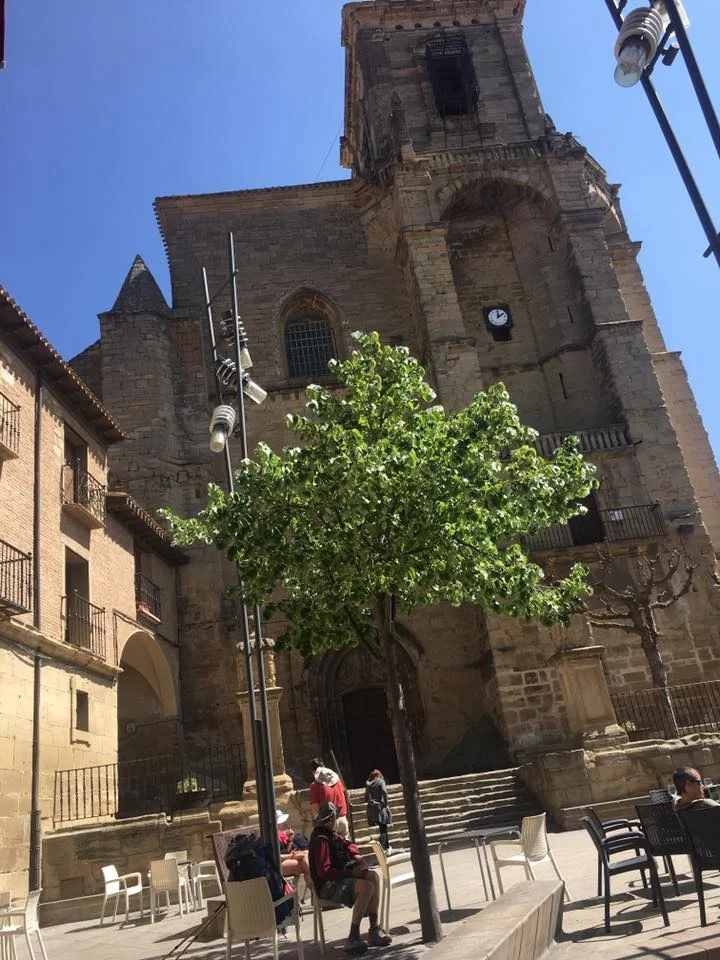
Plaza in Viana
We had quite a bit to drink that night with our new friends, as it was nice to finally have some real Camino friends to socialize with. We all remember quite vividly the really weird cheesecake that we ate here - we were pretty sure it was actually made out of cottage cheese (yuck!)
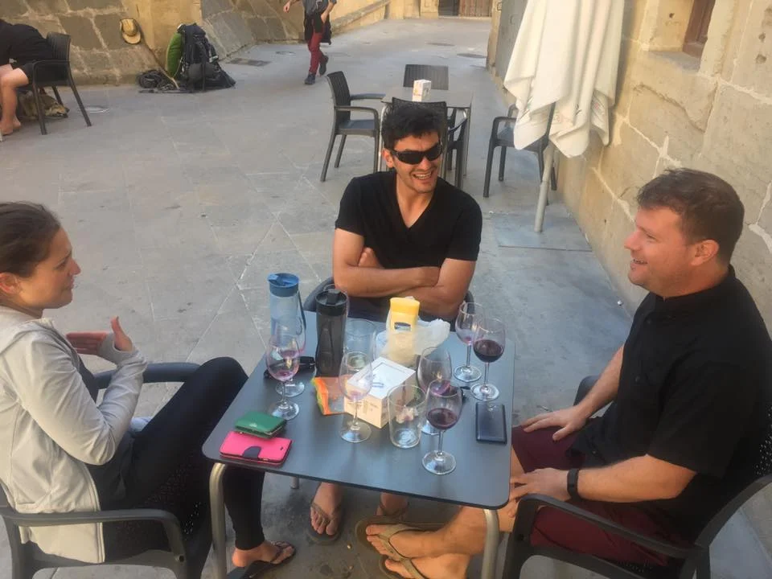
Dinner with friends
Day 10 - Viana to Logroño, 18.7km
The main destination we had in mind for this day's walk was Logroño, since it was the largest city on the route since Pamplona. My feet had been progressively getting worse, and the plan was for me to find some new shoes here.
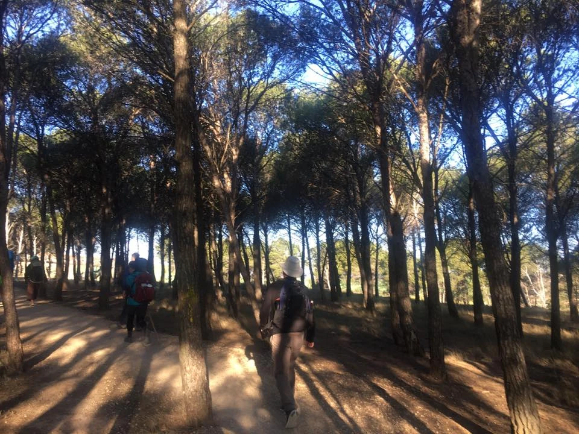
Leaving Viana
The walk today went through some wooded areas, vineyards, and along a few streams. The weather was great, and it was mostly a nice relaxing day of walking.
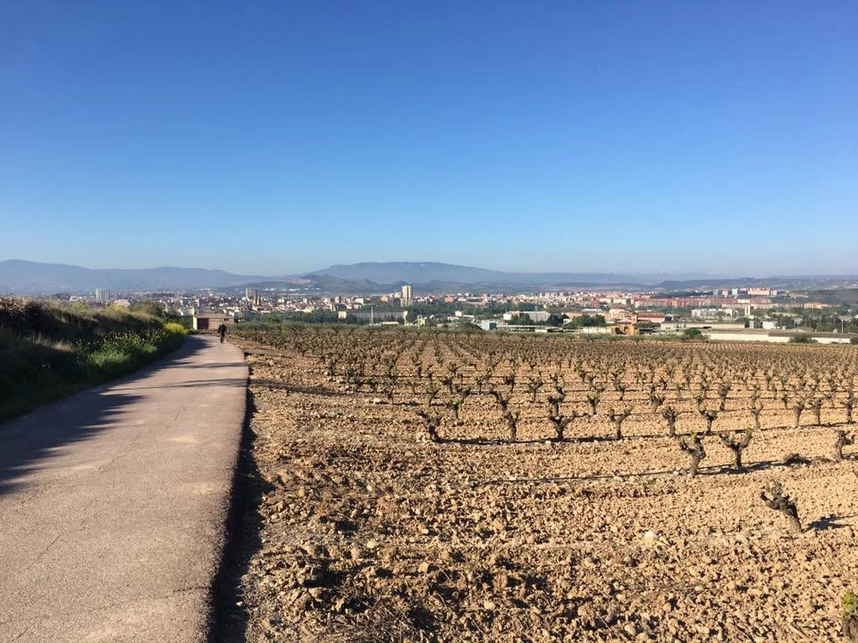
Vineyards on the way to Logroño
When we made it to the city, Scott holed himself up in a little café so he could check in on things back in South Africa. I left my bags with him, and grabbed a taxi to go find some new shoes. I eventually found a pretty large sports store, and managed to buy myself some new trail hikers. At this point though my feet had swollen to be a full size larger than they were back in Canada (I normally wear size 10 shoes back home and bought size 10.5 for the Camino - in Logroño I was forced to buy size 11.5 shoes because my feet were that large).
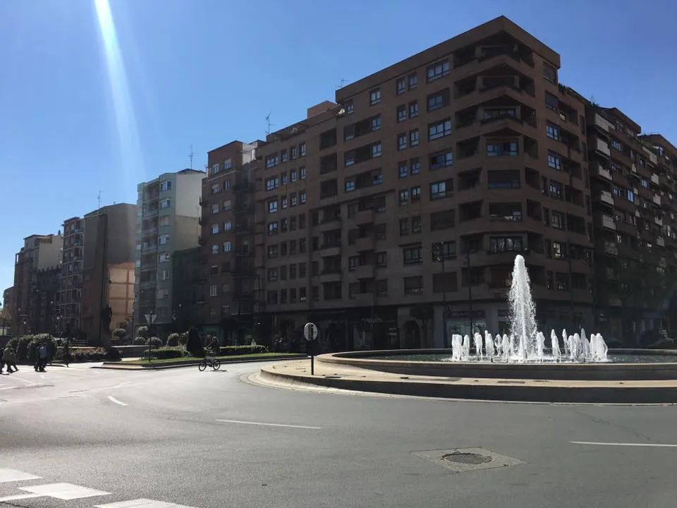
Fountain in Logroño
This is one of two nights on the Camino where I chose to stay in a donativo, in this case a church. We had a really amazing dinner here, but also had a strange experience with a French pilgrim who had been walking the Camino for years. He wasn't entirely broke, but he seemed to basically move from city to city and mostly just drink beer along the way. He was a nice enough guy to talk to, but there was something just a bit off with him. During dinner he was clearly intoxicated, and when it was over enough of the people in the Camino were concerned enough that the owners asked him to leave.
My feet were holding their own at this point, and I was looking forward to trying out my new shoes in the morning. Unfortunately for me though I walked into the bathroom during the evening and the floor was wet from someone who had just recently had a shower. I ended up having a really bad spill, which ended up ripping one of my blisters completely off and tearing the skin around it. So I spent some time in the evening doing my best to repair it all before setting off again the next day.
Day 11 - Logroño to Najera, 29.5km
Since I had my new shoes, Scott and I set out with high expectations for the day. We walked at a pretty good pace, and ended up doing about 17.5kms in our first stretch. We thought after that much hard work we should stop and have a few beers before marching onwards.
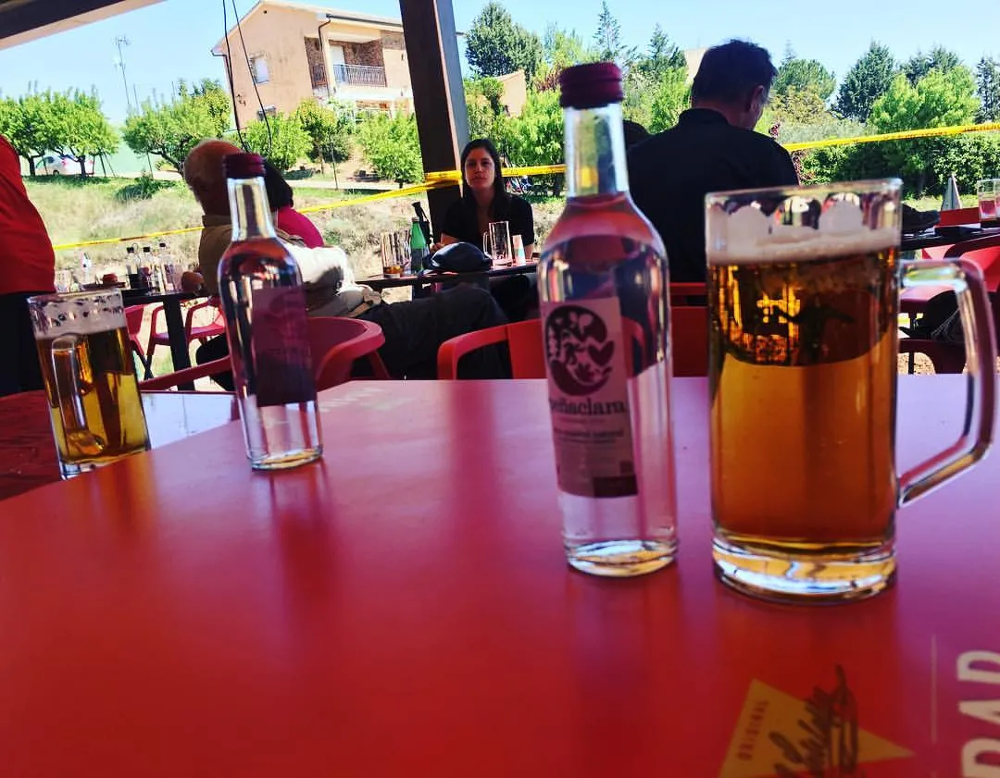
Beers in the Rioja Region
As we were officially in Spain's Rioja wine region, we ended up walking along many vineyards during the day.
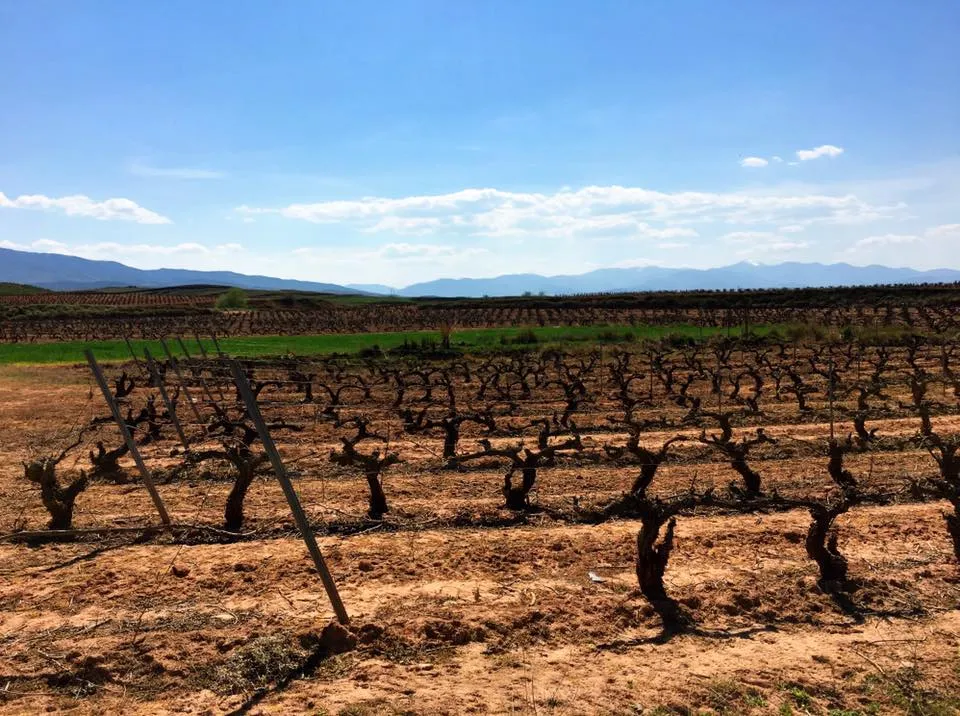
Vineyards in the Rioja Region
If there was one aspect of the Camino de Santiago that we didn't prepare properly for, it was Easter weekend. While we had heard rumours that the trail would be busier around Easter time, we weren't prepared for just how many people there were and how many of them would be fighting for the same beds each evening.
When Scott and I arrived in Najera, we quickly realized our mistake. We walked between three or four albergues, all of which turned us away due to not having any more space. We eventually stumbled upon some other pilgrims we knew, and none of them had any beds either. At this point I decided to bite the bullet and call a few of the hotels in the area to get a nice room for the night. But unfortunately none of them had space either. I even called a few *really* expensive hotels, and they were booked as well.
I've never been in a position in my life where the prospect of sleeping outside against my will was a real threat. While it was warm enough during the day, it was still hovering around 0C at night in April. Most of our group basically realized we were going to end up sleeping outside in a nearby park, and none of us were looking forward to it. We decided at this point there was only one thing to do, so we hit the bar and started drinking.
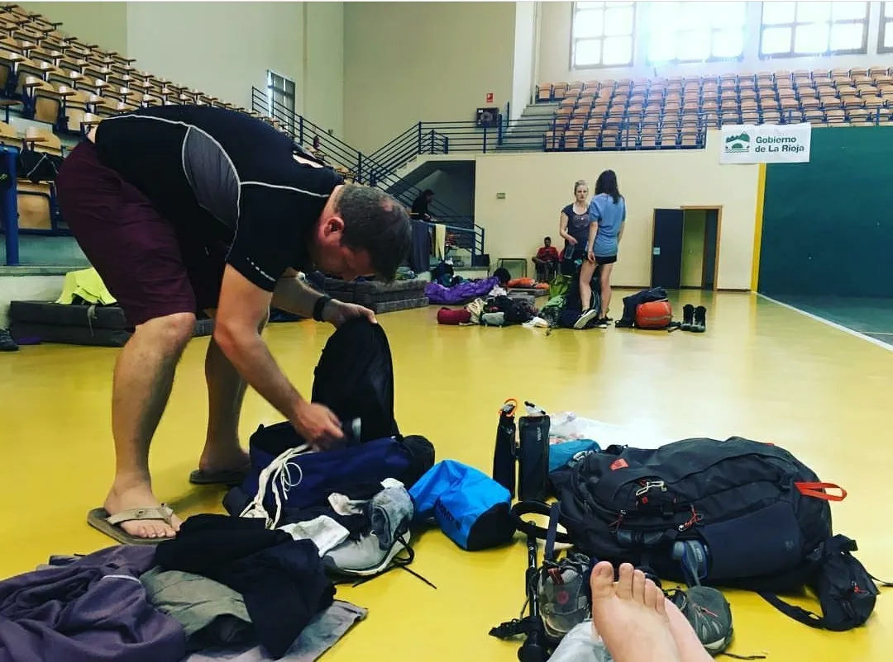
Setting up for the night in the gym
Thankfully at one point during the evening we heard that a gymnasium had decided to let pilgrims stay on the floor. Scott and I made our way there and eventually secured a piece of floor space for the night. While it wasn't comfortable at all, it was certainly way better than being forced to sleep outside in 0C weather.
Day 12 - Najera to Santo Domingo de Calzada, 21.5km
I woke up a bit cold and grumpy, mainly from having to sleep on the floor. I slept with earplugs in as well, which meant we were one of the last groups to leave in the morning. We quickly packed up our gear and set out.
I unfortunately didn't take any photos during the walk this day, probably because I was too grumpy. But when we reached Santo Domingo de Calzada and set up for the evening, my demeanour improved.
Having some wine in the albergue
Scott and I met a cool Brazilian guy named Luciano here. He didn't really speak English, so I had to do my best speaking with him in Spanish and Portuguese. I'm sure our conversations were pretty amusing looking back on them, but somehow we managed to both get our points across. The three of us ended up at a pub for the afternoon, and enjoyed some beers and conversation together.
Watching the sun go down from our dinner table
That evening we again met up with Julie and Dimitri, and had one of the more memorable evenings on the Camino. I remember Dimitri ordered a hamburger, and we were all amused when it showed up with no bun. Looking back, I think Scott and I both remember what a great time we had in Santo Domingo. It was a city we could have easily spent another full day in.
Day 13 - Santo Domingo de Calzada to Belorado, 23.4km
I've never really been much of a morning person. Even when I didn't own my own company, I would really hate getting up at 7:30 in the morning. I remember one summer where I had to be at work at 7am, and that was absolutely horrid. That said, one of the real treats of the Camino de Santiago was how many sunrises I saw during my walk.
Sunrise leaving Santo Domingo
Since we were walking due west towards Santiago, the sun was often rising behind us in the morning. You would often start walking through the dim light and occasional fog. After 30 minutes or so of walking you would see this amazing glow slowly fill the landscape front of you. I'd then spin around, and usually be treated to a really amazing sunrise.
The road to Belorado
One of my best memories of this day was walking a bit with Luciano (our new Brazillian friend) in the morning. We learned that he was a firefighter back in Sáo Paulo, and that he was walking the Camino for spiritual reasons. While many people along the trail were happy with the experience, Luciano seemed like someone who was consistently amazed by everything around him, and his enthusiasm for the journey was infectious. While him and I could communicate in Spanish (thanks to the period of time I lived in Buenos Aires for five months) and a bit of Portuguese (thanks to my previous Brazilian girlfriend), we often communicated just fine with simple expressions, like a nod or a smile.
A photo of Scott and I walking, taken by Luciano
As the walk would go on, I would end up looking at Luciano like a trusted companion, even though we couldn't communicate as effectively as I would have liked. It's really hard to describe the bond you end up forming with some people on a journey like this, but I felt a type of kinship to Luciano that I didn't feel with many of the others I met on this journey. But in him I think I recognized a type of kindred spirit.
Scott and me outside of Viloria de Rioja
When I set out from St. Jean Pied de Port, my intention was to grow a full beard over the course of the journey. As you can see from my photo, I was making pretty good progress at this point. I don't believe I had ever had any facial hair as long as this before, and I remember it starting to feel pretty itchy.
576km to Santiago
Day 13 - Belorado to Burgos, 51km
Scott and I originally planned to do about 30km this day, but once again we were completely screwed over by Easter.
Walking 30km takes normally about 6 or 7 hours on the Camino, and we pushed ourselves hard to go that far. Up until this day, neither of us had gone past 30km before, mostly due to my feet or Scott's knee.
Medicating
Despite our enthusiasm, we were both still hurting from our various ailments. That meant we were both taking quite a bit of advil (I feel so old saying that!), and the occasional beer (which strangely seemed to help).
531km to Santiago
Once aspect you quickly learn on the Camino is basically not to trust the distance on any sign. There are lots of examples along the way of your guidebook telling you it's only so many kilometres until the next village, but often encounter a sign telling you something completely different. You would routinely see markers to Santiago that basically completely contradicted a sign that you saw not that long ago. This sign for example said we were 531km away from Santiago, but one that we passed not that long before said 576km. Basically you just take comfort in the fact that the number mostly just keeps getting smaller as you walk.
Somewhere around the 30km mark, Scott and I realized that accommodation was going to be difficult again. We were both getting tired, and so far hadn't been able to find anywhere to sleep. So we decided to dump out the water from our water bottles, replace it with wine and then march on.
Scott filling up his water bottle with wine
Every town we passed we tried to get accommodation, and every single time they were full. Eventually we hit the last albergue we could find near Orbaneja-Ríopico, roughly 35km from where we started, and couldn't find anything either.
Near Orbaneja-Ríopico
It was going to be another cold night, and neither Scott or myself relished the thought of sleeping outside. Burgos was the next city, and it was still about 10km away. With the sun starting to go down, we decided to call a cab and taxi to Burgos for the night. We really had no choice since there was literally nowhere to stay, and other pilgrims who were also without accommodation were forced to do the same.
A large plaza in Burgos
When we got to Burgos, we messaged Julie and Dimitri, and it turns out that they had been forced to taxi to Burgos as well. So we made plans to meet up for dinner.
Julie and Dimitri after a very long, tiring day of walking
The last big city we had been in was Logroño, so it was definitely nice to see the hustle and the bustle of the city again for the evening. Burgos was such a beautiful city too, and was one of the highlights of my trip.
Tree-lined streets in Burgos
Day 14 - Rest day in Burgos
Scott only was able to take approximately one week off from his own company for the walk, which had always been the plan. Back in South Africa he runs a company with his wife, and thankfully Samantha looked after everything while he was gone.
My credencial, now with two full pages
Since Scott had to head back to Madrid soon to catch a flight, we decided to have one last day together in Burgos and just enjoy the city. Julie and Dimitri decided to do the same, so it was a really great day amongst Camino friends.
Walking around Burgos
Scott was leaving in the morning, and Julie and Dimitri had decided they had had enough walking for a while and were going to rent some bikes to get the next portion, the Meseta, out of the way. That meant there was a good chance that none of us would see each other again, which was a bit sad. Thankfully we had an opportunity to have one last dinner together, after which we snapped this final selfie before I would carry on with the ring to Mordor alone.
The breaking of the fellowship
If you were to attempt to break the Camino de Santiago up into stages, three naturally sort of jump out at you. The first, St. Jean Pied de Port to Burgos, was the portion we all had just completed. The second is from Burgos to Leon, and it crosses a large desert-like area called the Meseta. The final portion, from Leon to Santiago de Compostela, passes through Galicia. All three stages have dramatically different challenges, geography and often even weather. Many people choose to skip the Meseta because the scenery is much more dull, the distances between villages larger, and there is little to no protection from the sun. But I decided I would carry on and keep walking, even though it meant walking mostly alone again.
Day 15 - Burgos to Tardajos, 11km
I woke up in the morning and said goodbye to Scott - he was off to the train station to head to Madrid, and ultimately onwards to South Africa. My original plan had been to stay another day in Burgos and rest my feet a bit more (my blisters were epically disgusting at this stage - Scott had been encouraging me to visit a hospital they were so bad).
Pilgrims on horseback
Despite the pain though, I really didn't feel like sitting around the hotel again. You get to a point on the Camino where being at rest seem strange, and walking feels normal. So I decided to walk for a little while and see where I ended up.
Entering the countryside again
It was another beautiful day, and it wasn't long before I was in my short sleeve t-shirt again soaking up the sun.
Gorgeous scenery outside Burgos
I keep talking about my blisters, but I haven't really shown any yet. The reason for that is when I originally posted some on Instagram during my walk, some people were totally grossed out. That said, I think it really helps to have some context to see what I was suffering with.
Busted up left foot
Busted up right foot
I basically lost most of the skin on both my pinky toes, and a huge chunk of skin on the bottoms of both of my feet. In retrospect, I made a couple of big mistakes, the first of which was walking in sandals on the first day through the Napoleon route. The second was using Compeed on my feet, as I feel it just made the blisters bigger each day since the pressure had nowhere to go to be relieved.
This was a rather short day for me, just a little shy of 10km, but I still needed it due to the state of my feet.
Day 16 - Tardajos to Hontanas, 21.1km
It was on this day that I officially felt like I was on the Meseta. It was cold and windy in the morning, and the sun was beaming down on me for most of the day.
Windy on the Meseta
Julie and Dimitri I think were half way done the Meseta at this point, as they had covered nearly 100kms on bicycle while I had barely done 20kms. I won't lie, I was a bit jealous, since I hadn't met any new people really and the Meseta had so far been a bit dismal.
In Hontanas I met a great group of Italian guys that I would run into again and again as I made my way to Santiago. They also had a really amazing paella dinner for 12 people that I was fortunate enough to partake in.
Group paella in Hontanas
Later that evening at the bar I would also meet a few dutch people, namely Roger, and Marja, and one American, Melanie.
Day 17 - Hontanas to Fromista, 35km
As the Meseta involves many long stretches of trail, people often end up walking larger distances each day. I decided that since I had enjoyed a few rest days in Burgos that I was going to try and do a longer day today.
My favourite sunrise on the Camino
It was this morning that I turned around shortly after leaving in the morning and caught my favourite sunrise of my entire walk, just outside of Hontanas.
Alone but not lonely
I spent a lot of time on the Meseta simply walking without really thinking. Sometimes you end up entertaining the odd thought. Sometimes you end up putting your headphones in and listening to music. But often you would just empty your mind and walk for long stretches, content with the silence and the solitude.
Roman ruins on the way to Fromista
A large part of the Camino de Santiago runs along ancient Roman roads. In fact, there are various stretches where Julius Caesar once walked a long time ago. During part of this day's travel I passed some ancient Roman ruins, which were amazing to behold.
The road goes ever on
A 35km day is quite long. It usually involves being up at 7am, and walking until probably 5pm or so with a few small breaks and one larger one for lunch. So as I was nearing Fromista, I was starting to feel a bit worn out and anxious to get out of my shoes.
Approaching Fromista
Day 18 - Fromista to Carrión de los Condes, 19.8km
I didn't know anyone in Fromista, so I wasn't really that keen on sleeping in or staying too long here. So I didn't waste any time getting out the door in the morning when I woke up.
A church I passed on my way out of Fromista
This day was pretty unremarkable, except of course for this extremely weird place I stopped for lunch that was disturbingly decorated with mannequins.
Weird Lunch Spot
While I mostly tried to stay in the communal albergues during my walk, I wouldn't hesitate to upgrade to a private room when I really was starting to feel sleep deprived. When I reached Carrion, I found a cute little hostel that had rooms for about 30 euros, so I snatched one up and spent the evening reading my Kindle in a nice heated room and snacking on chocolate. Many of the albergues weren't heated, which often meant being a tad bit cold while you slept in the evenings. Having an actual heated room was welcomed whenever you could find one.
Small upgrade for the night
Day 19 - Carrión de los Condes to Ledigos, 23.9km
The days in the Meseta all seem to blur together. Even now trying to remember what I did on each of these days is a major challenge. I'm sure at this point Julie and Dimitri were done the Meseta, and probably relaxing in Leon. I was still pushing onwards, and remember my face being pretty wind burnt around now.
The high plains of Spain
When I arrived in Ledigos, I found a really quant albergue that had private rooms for 12 euros, which was a steal. I spent what was left in the afternoon having a few beers out in the common area with a German couple. They had recently been to New Zealand, so we both compared our experiences with visiting the set of Hobbiton in Matamata.
My little room for the night
While the official half-way point of the Camino is strangely debatable, Ledigos is approximately 400km from St. Jean Pied de Port, which meant after 18 days I was half-way to Santiago. I had travelled from the mountains of France, and ended up nearly half-way across the country of Spain.
It was a great feeling.
Day 20 - Ledigos to El Burgo Ranero, 35km
I woke up early in the morning and set out again, thankfully in time for yet another epic sunrise.
Sunrise leaving Ledigos
Near Sahagun you pass by a structure that is supposed to officially mark the half-way point between St. Jean Pied de Port and Santiago. Strangely in terms of distance it seems to be approximately 20kms past it, so I'm not entirely sure how the math works. Regardless, when you pass this point you are most definitely past the half-way point.
The 'official' half-way point of this route
If you've been keeping track, you may have noticed that I hadn't taken a rest day since Burgos. That meant I basically walked the entire Meseta in about seven days, which surprised me. Some of those days were really quite long, but there wasn't a great deal to stop and admire in the Meseta (even though it was pretty in its own way).
While my feet were still in rough shape, I had gotten used to it at that point, and simply was able to block out the pain most of the time. I had stopped using Compeed as well, which made a big difference (in my mind) with how I was able to manage my blisters at least.
More long distances
One thing about the dutch you should realize is that they are pretty big drinkers. As a Canadian engineer, I'd like to think I can keep up with the best of them. But later in the evening I ended up going out with the dutch group I met in Hontanas, and before long there were rows of empty shot glasses on the table.
Marja and Melanie
I remember crawling back into my bunk bed around 11pm or so, knowing full well the next day was going to be really rough.
Lots of smiles after walking more than 400km
Day 21 - El Burgo Ranero to Leon, 38km
This was probably the roughest day of the entire Camino for me. I actually purposefully was trying to go easy on the partying on the Camino, despite how it may look from some of these photos. On most nights I typically would retire to my bunk bed and read or write in the evenings, but on some of them, like the night before, there was some celebrating going on, and I decided to partake.
I woke up with a headache this morning, but forced myself to get going since I knew it was going to be a long day. I walked across the street to get some breakfast, but quickly realized that I had no money - apparently I had spent whatever was left in my wallet the night before when I was out with the dutch group. I asked the owner in Spanish where I could find the nearest bank machine. He pointed down the road and said "19 kilometres" in Spanish.
Fuck.
Sunrises aren't as pretty when you are hungry and hungover
So I spent the next four hours walking on an empty stomach, basically penance for the previous night's debauchery. While I don't mind starting the day without food, I certainly did miss having my morning coffee. As soon as I found the bank machine I made sure to take out a little extra money and hide it in another part of my wallet to make sure that it didn't happen again.
Even though I was nursing a hangover, I hadn't had a day off since Burgos and thought how amazing it would be to have a few nights of rest in Leon. Leon is basically the last large city before Santiago, and I was sure I would run into some of my other Camino buddies there. So I set off again, and ended up doing my second longest day of the Camino, just shy of 38kms.
Finally out of the Meseta
I figured Leon would be the last place with a few nicer hotels, so I decided to grab one so I could make sure I was all rested before setting off again.
Day 22 - Rest day in Leon
Thankfully my hotel was near the main part of Leon. When I woke up in the morning, I got my laundry going and then set out to do some exploration. I found a cute little café along the Camino route and sat there for an hour or so, just watching people. Eventually I ran into the group of Italians that I originally met in Hontanas, and we all caught up again (most of them didn't speak english, but a few smiles and pats on the back go a long way).
The famous cathedral in Leon
It seemed like there was a really big group of us in Leon, as most of us had decided to have a rest day here. So I organized a little get together at a Beatles tribute bar called Taxman.
Beatles Taxman Bar
I got there a bit early, so I just enjoyed a beer on my own while talking to the owner and listening to Beatles music.
Quick selfie in the Beatles bar
I took a quick selfie to update my friends on Instagram, and noticed how wind-burnt my face was. Also, my lip had cracked open the other day from the constant wind on the Meseta. Regardless though, I was feeling pretty great, having made it through the Meseta and 2/3 of the way to Santiago.
That night a group of us were trying to figure out what to do for dinner, and Roger said he passed the sign for a Michelin-starred restaurant. None of us had ever eaten at a Michelin-starred restaurant before, and thought it would be pretty funny if we all showed up in our tattered walking clothes and ate a fancy meal. So that's what we did.
Michelin Starred Restaurant
Roger, originally from Holland, now lives in Spain so his Spanish was deadly. He took ownership of ordering all the food and wine, which was fine by most of us. That group ended up being myself, Ange (from the UK), Melanie (from the US), Roger, and two other guys whose names I no longer know unfortunately.
I met Ange back around day 19 I think - she ended up at a table I was sitting at with the dutch people during a routine afternoon lunch stop. She was living in the UK at the time, and had done a large chunk of the Camino years ago. Her goal this time was to finally finish it.
Friends at the Restaurant
The food was absolutely divine, especially since most of us had been surviving off of sandwiches and croissants for the past few weeks.
Food at the Restaurant
Roger ended up ordering probably 10-12 different dishes, and we just shared them all over wine, which was great.
More dishes
Surprisingly the bill wasn't that expensive - I think it worked out to about 40 euros each, which seemed more than reasonable for the experience and the quality of the food.
We all went out for a few more drinks afterwards, and then called it a night.
Day 23 - Leon to San Martin del Camino, 25.7km
The distance from Leon to Santiago de Compostela is roughly 300km, and it was one of the places I had originally debated starting from. It was surreal for me that I was now here, having walked 500km across France and Spain. I also knew in my heart at that point that I was going to finish, something that wasn't entirely clear until then due to my ongoing injuries.
Scenery leaving Leon
The scenery leaving Leon was pretty dismal, but I just chugged on, hoping I would get to see some trees again soon.
Quick stop outside of Leon
This was a cold day, and I remember that I didn't stop for very long when I did because I would end up shivering.
I snapped this selfie after passing a thermometer that read -3C
I ran into Ange a few times during the day, and we walked together for part of it. While some people choose not to bring phones on the Camino, I was glad I took mine with me. Not only was it my primary camera (I chose to leave my dedicated digital camera in my suitcase back in St. Jean), but it made keeping connected to people I met along the way that much easier.
Day 24 (Apr 27)- San Martin del Camino to Murias de Rechivaldo, 29.2km
Some people reach the end of the Camino and simply want to do everything in their power to stop the Camino from ending. I didn't picture myself being one of those people. I was certainly enjoying myself and meeting great people, but for me Santiago was going to be the end, and arriving there in less than ten days was starting to feel real.
-3C early morning departure
This was another brutally cold morning, and I had to wear my outer layer for the first half of the day (even though the sun was shining).

Dirt Roads
Prior to starting the Camino, I read lots of stories of people who lost weight while walking to Santiago. I did some napkin math before I started, and estimated I would probably lose about 20 lbs based on how much food I imagined eating and how many calories we would burn walking.
One of my go-to snacks: pain au chocolate and a coffee
After talking to most of my friends on the Camino, we all basically believed we were in fact getting larger, not smaller! Maybe it was water retention from not drinking enough water, or maybe it was simply that we were all gaining lots of muscle. Or it could be whatever weight we lost had simply been restored on those occasional late nights with wine. It was strange thinking though that we were walking for most of the day and gaining weight, but that seemed to be the consensus amongst about ten people I had polled.
Me, Hospital de Órbigo - photo by Ange
At some point during the day we went through the city of Astorga. In retrospect, I wished I had planned to end up there for a evening, as it seemed like a really cute little place to stay. But the day was still pretty early, and I felt like walking further, so I moved on.
Dramatic clouds
Near the end of my day's walking, I ended up running into that French pilgrim who had been walking the Camino for years (the one who got kicked out of the donativo). At first I didn't really fancy walking with him too much, but scolded myself mentally for not wanting to at least hear more about some of his experiences. So we walked and chatted for a while.
Approaching Astorga
When we reached the next town he said he was stopping, and asked if I would stay there too so he would have someone to hang out with and talk to. It hadn't been my plan, but I didn't come on the Camino to be a jerk so I told him I would. Unfortunately that would turn out to be a mistake, as he quickly angered the albergue owner with his attitude and ultimately was asked to leave (yet again). So in the end I stayed the night by myself in that really dismal and cold albergue for no reason.
Cathedral in Astorga
I went to bed early, since I knew I had a really long day ahead of me the next day. There was a storm coming, and I was heading into the mountains. Ideally I would have liked to stop the next day right before the mountain pass, and then attempt the crossing the day after. But the forecast was calling for snow in two days, and there were rumours that we wouldn't be able to visit Cruz de Ferro (an important part of the spiritual aspect of the Camino). So that meant I needed to push hard to get to Cruz de Ferro the next day. Even though it was only 33km, it would involve a lot of climbing, similar to the first day through the Pyrenees.
Day 25 - Murias de Rechivaldo to El Acebo, 33.1km
I took my first photo at 6:59am, so I suspect I was up around 6am this day. Many of the albergues were unheated, which often didn't really present a problem. But the one I stayed in the night before was quite basic, and whatever blankets they handed out didn't do much to keep the cold away, even with a sleeping bag. So I didn't have a very restful sleep.
First shot of the day; off to the mountains
My phone said it was -4C when I started walking, and I remember seeing my breath when I walked.
Another sunrise
No place was open to get a bite to eat when I left in the morning, so I stopped at the first village I encountered where there was a bit of life: Santa Catalina de Somoza. I had a croissant and a coffee there, and ended up talking to the owner for a few minutes. She said she couldn't remember a time when it was this cold in April on the Camino - it hadn't happened in years. That said, I had only had one day with any type of rain at all in my 25 days of walking (also completely unheard of), so I certainly wasn't complaining.Walking through the countryside
One thing I noticed while walking that day was just how trail-hardy I had become. I had really struggled on my first day through the Pyrenees, but for the most part was hardly breaking a sweat anymore due to the walking itself.
Walking like a boss near Rabanal del Camino
Despite a pretty significant elevation gain and a long day of walking, I felt perfectly fine during the day and actually spent a lot of the day passing people as I walked. I felt really great about that.
Starting the climb to Cruz de Ferro
If you've seen the movie "The Way", Cruz de Ferro is the iron cross where they say a little prayer and all deposit a rock that they brought with them. It's a very important part of the Camino experience, and it's meant to symbolize leaving a burden behind.
The rock I chose near Cultus Lake in BC, Canada
About a month before I started the Camino, I drove down the road from my cottage to Cultus Lake. There I picked through various rocks near the water, eventually stumbling upon a small, flat one that seemed like the perfect rock to take with me. I packed it in my backpack, and carried it with me on both plane rides, all the way up to the cross that day.
My first view of Cruz de Ferro in the distance
One of the personal reasons I walked the Camino was to have some time to evaluate where I currently was in my life. I had a lot happen during the last few years, including a significant relationship breakup and the sale of my company. During my walk I came to peace with the fact that I had made various mistakes in my life, some of which were correctable, and others that weren't. But the part I had the most trouble with was forgiving myself for making them in the first place.
As an engineer, there aren't many obstacles I've encountered in my life that I wasn't able to circumvent. But what I had learned in the last few years is that no matter how hard you try or how well your intentions are, some things just can't be fixed. And I needed to come to terms with that during my walk.
A few moments before leaving my rock at Cruz de Ferro
When I reached Cruz de Ferro, I gently placed my rock at the top of the pile and decided to finally forgive myself. I posted the following on Facebook shortly after:
I've carried this rock from Cultus Lake, BC, Canada to the Cruz de Ferro on the Camino. It's travelled about 500km by car, 8,000km by plane and about 570km by backpack. Many pilgrims bring a rock from home and leave it here as a symbol of a burden they no longer wish to carry. I have been thinking the last few days what this moment will mean to me, and here's what I want.
For all the times in my life when I went in a wrong direction, for all the mistakes I've made both in and out of relationships, for all the times I've accidentally hurt people, I'm going to leave this rock behind and do something that for me is much harder than walking 800km across France and Spain with a backpack - I am going to forgive myself.
I stayed at Cruz de Ferro for another 15 minutes just watching other pilgrims stop and place their rocks there. Afterwards, I continued to walk, and shortly found myself at the highest point on the entire Camino Frances (1550m) where I filmed a little video.
The trail to Majarin
There seemed to be a lot of accommodation in El Acebo, which is why I was headed there. The last hour or so leading into the village was really rough on the knees and feet as it was a pretty steep descent on a rocky road.
Hard on the feet
When I arrived in El Acebo, I found a really luxurious albergue that just opened with a fantastic view, so I grabbed a bunk there. One of the Italian guys ended up being in my room as well, which was a nice surprise. I started a load of laundry, then went down to the patio to enjoy the last bits of sunshine with a glass of wine.
Evening Wine
That night Melanie and I ended up chatting for a while and talking about photography - I showed her some of my favourite applications that I use, including one that helps with HDR photography. Not long after we saw the sun go down, where I snapped this photo.
Sundown in El Acebo
I remember sipping some wine, staring into that distant sunset and thinking excitedly to myself: Santiago was just over that last visible mountain range, only 9 days away.
Day 26 - El Acebo to Cacabelos, 32.2km
I started walking around 7am that day, and ran into Marja not long after. Her and I walked together for a while, mostly until we started the steep descent that lasted for the next few hours.
Sunlit hillside
I walked by myself for most of the second part of the day. At one point I passed through Ponferrada, which was the original starting point I considered when I first imagined doing the Camino. That meant I was officially less than 200kms from Santiago.
Ponferrada
Eventually I walked into Cacabelos and found a room for the night. I ran into the Italians briefly during the evening, but most of us were all pretty wiped so we had an early night.
Arriving in Cacabelos
Day 27 - Cacabelos to Vega de Valcarce, 24.8km
It was drizzling lightly when I woke up, so I had to put on my outer wear as well as my pack cover. Normally during this time of year it's not abnormal to have 15 out of 30 days with some rain - so far I had only encountered rain twice in 27 days.
Rainy landscapes
I stopped for breakfast after about an hour, and ran into the Italians at the same café. While we wouldn't deliberately walk together during the day, we did make plans to stop for lunch and some wine together in a specific village.
Liquid lunch with the Italians
The distance signs to Santiago started to come fast and furious at this stage, so you always knew roughly how far away you were. I caught one of these signs posted on the wall of one of the cafés I stopped at - Santiago, only 176km to go. I was reminded of the first sign I saw on Day 2 that said we had 790km to go - hard to believe that was over 600km ago.176km to go
My original plan was to have an early night, and I almost accomplished that. Here was a selfie I took in my albergue after arriving - I was sporting a pretty good tan at this stage, and also some noticeable wind burn on my face.
Albergue selfie
I was just getting ready to retire for the evening when both Melanie and Roger messaged me and showed me the comfy lounge they were at in their hostel, complete with a wood burning fireplace. So they convinced me to pack up my stuff and head there, which I did.
There was officially no room at their hostel for me to sleep, but they said if I would come out and have a few drinks with them that I could sleep in the extra bed in the corner of their room. I don't think Melanie realized what a bad idea that was at the time - two slightly intoxicated guys snoring away through the night in the same room (sorry Melanie).
It turns out a lot of the people I had met along the way were staying in that hostel, and we ended up with a large group of 10 or so of us drinking and reminiscing about our journey around the fire. It was definitely one of my better memories from the Camino, so I'm glad ultimately I ended up changing accommodation.
Day 28 - Vega de Valcarce to Triacastela, 33km
I hit a point during the previous night's festivities where I realized if I were to keep drinking that I probably wasn't going to enjoy the next day at all, which involved a climb up to O Cebreiro. So while I ended up making the right decision to taper off at the end of the night, Roger didn't. As such, he was pretty much unmovable in the morning, so Melanie and I set off without him.
Melanie
After starting the long climb to O Cebreiro, Melanie and I stopped for a coffee at the first quant little café we encountered.
Coffee by the fire
While not as high as Cruz de Ferro, O Cebreiro was high enough that we encountered snow a few times during the day.
Snow in the mountains
At some point during the day's walk we encountered the official marker showing that we were now in the Galicia region of Spain.
Galicia
The tree topped trail to O Cebreiro
Melanie had a thing for hamburgers, and often tried her best to eat a hamburger wherever we went. Unfortunately we couldn't find any for her that day, so we had to settle for soup I believe when we reached O Cebreiro.
Day 29 - Triacastela to Ferreiros, 39km
Triacastela literally means 'three castles'. I don't particularly remember seeing any, but it was a cute little town that we ended up staying the night in. I stayed down the street from Roger and Melanie, and ended up being in the same hostel as Marja. Many of us had put on a lot of miles over the last few days, so we were all feeling pretty beat.
The Camino Marker: 130km to go
At some point during the day, we were going to pass the village of Sarria. To obtain an official compostela certificate in Santiago de Compostela, a pilgrim needs to complete at least the last 100km of the Camino. For those pilgrims, Sarria is the closest starting point. We were told that the atmosphere of the Camino would change after that point, so we expected this would be our last real day of mostly peace on the Camino.
Ange entering Sarria
Ange and I had at one point started walking together, and we mostly stuck together for the rest of the Camino trail. While the Italians and the Dutch weren't far behind, we ended up staying in different locations since we were all going different distances each day.
Outside of Sarria
Most of us at this point were looking forward to arriving in Santiago in a few days. I had planned to take a few more months off in Europe, and was looking forward to spending some time on the beach in Spain or Portugal after. Julie and Dimitri had recently arrived in Santiago, so I got to see some of their excitement via WhatsApp and Facebook when they arrived. None of us were trying to rush our last days, but I don't think any of us wanted to artificially prolong them either. While I hadn't complained about my feet in a long time, they were still full of blisters and requiring a lot of rest time and nightly maintenance.
Walking with Ange
Ange and I did close to 40km that day, which was pretty tiring. We ended up stopping pretty much every hour for a 15 minute rest where we would have a coffee or a snack and take our shoes off.
A photo of me today, taken by Ange
At one of the last stops I saw a girl from Spain who was having a really hard time walking on her knee. Her boyfriend was doing what he could to help her, but she didn't have a knee brace and said she was having a hard time with the hills. I had been wearing a knee brace for most of the trip to help with my bad knee that I hurt years ago on the West Coast Trail, and it had definitely helped. She seemed to be worse off than I was, so I went over to her and gave her my knee brace that she could use for the rest of her trip. Her boyfriend was really appreciative of it, and about 10 minutes later a big beer was delivered to my table, courtesy of the both of them.
Nearing Ferreiros
Ange and I really wanted to pass the 100km marker before finding an albergue, as we both felt it would be a symbolic way to end the day. That's why we pushed onward to make it to Ferreiros before sundown. When we arrived we found a really great albergue with an amazing view from the front lobby. So we set up shop for the night and had a really nice lentil soup for dinner.
View from the albergue
Day 30 - Ferreiros to Palas de Rei, 35km
At this point we were officially less than 100km from Santiago. Based on the estimate I made when looking out at the distant sunset with Melanie days prior, I figured we still had four days of walking (including today) to go.
The magic hour
The trail leaving Ferreiros
The scenery was quite lovely on this day, and it was warm enough that I spent a good chunk of it with just shorts and a t-shirt.

Me, less than 100km to go
Ange was walking behind me most of the day, and she was nice enough to snap a few photos of me at various times.
More Me (thanks Ange)
We reached Palas de Rei in the late afternoon and found a cute little albergue near the entrance to the village. Most of the people in our room had started in Sarria, and one lady in particular was really hurting physically. We shared whatever advice we could give her, most of which involved us telling her to throw out half of what she had in her backpack (overpacking is really common on the Camino - everyone, myself included, brought things they didn't need).
Roger and Melanie were staying in a hostel about 2km out of town. They asked me to come for a drink, but after walking nearly 40km, they weren't having much luck convincing me to walk 2km more. Eventually though I relented (I'm an oak), and walked down to their hotel for some appetizers and a few drinks. By the time I got back to my room in the evening, I had walked probably close to 45kms that day.
Day 31 - Palas de Rei to Salceda, 41km
So Ange and I set out in the morning, not really sure where we would end up. My original plan had been to walk about 22km per day for the last three days to Santiago. But the forecast showed some bad weather coming, and we were all dreaming of sleeping in comfy beds again and putting on some different clothes.

65 kms to go - three days, or two?
After some discussion, we decided to walk as far as we could that day. If we could get close to 40kms, that meant we could stroll into Santiago the next day (Friday), and miss a really bad portion of weather that was coming.
Pamplona Blister
I was still fighting blisters, especially this one that first started way back on day 3 in Pamplona. Honestly, at this point I was a machine and just focused on mind over matter in terms of blisters. But I knew that after another 65kms I could finally let my feet heal, and I was looking forward to it.
Scenery
I was having a really good walking day, so I ended up walking ahead of Ange for a good chunk of the day. When I arrived in Salceda, about 41km from where we started in the morning, pretty much every place I could find was full. I messaged Ange and told her I was going to try to find her a place too, since she was about an hour behind and pretty wiped out. She said if I could find only one bed, I should take it and she would just keep going. I said no way, either we got two beds or we'd both keep walking.
Thankfully I managed to grab the last two beds in town, and prepaid Ange's for her. When Ange strolled into town about an hour later, I was already outside airing out my feet and sipping a beer I think.
A few hours later Roger and Melanie messaged me and asked if there were any beds available, since they couldn't find any. Like us, they had walked about 40km and were beat. I asked at the front desk, but there was nothing. So they said they would come by and at least have some drinks with us before deciding what to do next.
When Roger and Melanie showed up, Ange and I met them in the restaurant and had some drinks and food with them. After a few beers Roger and Melanie decided that instead of sleeping outside or looking for another albergue to stay in, they were simply going to carry on to Santiago that night. So instead of walking 41km, they were going to push onward and walk 68km.
Roger went around the room asking for everyone's WhatsApp address, even strangers - he said the only way he could complete it if he was accountable to people, and promised to update everyone every hour. Him and Melanie then did about three or four shots of alcohol each, and got ready to set out again. It was about 8pm at the time. I donated my headlamp to Roger, since I hadn't used it since Ziburi and he clearly needed it. We said our goodbyes, and they set off into the night heading for Santiago.
As promised, during the night we got lots of updates. At one point Roger sent a photo of them drinking booze with a bunch of police officers at 2am in some random town. And sometime around 5am, we got the final shot.
Roger and Melanie in Santiago de Compostela, sometime around 5am
I'd like to think he wouldn't have made it without that snazzy headlamp he's wearing. It was a pretty epic end to an amazing adventure for both of them.
Day 32 - Salceda to Santiago de Compostela, 29km
The rain that was promised to hit on Saturday unfortunately started to come down on Friday, so when I left it had already started raining. I was up a bit earlier than Ange, so I set out on my own, but I was pretty sure she'd catch up to me at some point.
Rain on our last day
Onwards towards Santiago
A few hours into the day we passed a marker that showed we only had 19kms to go - what a great feeling!
19kms to go
After 20kms or so, the rain started coming down hard. Ange and I stopped in Monte del Gozo for a coffee and to hopefully wait some of it out. I shot this video then, knowing we were only about 90 minutes away from being finished our epic 800km adventure.
The rain didn't die down that much, but we started out again nonetheless. 45 minutes later we were walking down the streets of Santiago, waiting to see the first view of the nearly 1000 year old cathedral.
The streets of Santiago
Shortly thereafter Ange and I caught our first glimpse of the cathedral.
Our first view
As I was approaching the final tunnel leading into the plaza where the cathedral was located, Ange took my last photo as a pilgrim.
Me, about 30 seconds before finishing the Camino de Santiago
When I passed through that tunnel, I finally laid my eyes on the famous cathedral in Santiago. It was on these sacred grounds where the remains of St. James (apostle of Jesus) were thought to be buried. For nearly 1000 years pilgrims have been walking to this destination across Europe, and after 32 days my own personal journey was about to end. I walked up to the cathedral and placed my hand on it, symbolizing my completion of the pilgrimage.
I did it. I walked 800km between France and Spain, and became a pilgrim in the process.
Celebratory beers in Santiago
Final Thoughts
One aspect of the Camino de Santiago that needs to be discussed is that it's a very personal journey for everyone. Along the way you will meet many people who will try to tell you the proper way to do the Camino. Don't take any technology with you. Don't walk more than 15 kms per day. Don't listen to your iPhone. Spend your time writing and reading. Don't use aluminum poles, only walking sticks. This list goes on and on.
At the start, I found those people incredibly annoying. But the Camino for me was about personal growth, and by the end of it I had learned to be more understanding and patient of those people - at the end of the day they were just trying to ensure everyone had a great Camino experience. The truth is though that nobody can tell you what your pilgrimage will look like, nor should anyone really try. The Camino is a personal experience, and one of the lessons you learn along the way is that you need to walk it at your own pace; not just the ups and downs of the trail, but also the various rocky paths of your life.
A happy reunion with Julie and Dimitri in Lisbon, Portugal, a few days after I completed the Camino
Nobody goes through life, or the Camino, alone. Along the way I was fortunate enough to meet so many amazing people, and I'm profoundly thankful that I have been able to keep in touch with most of them. The bonds we formed along the way I suspect are lifelong, and no foundation for a friendship is stronger than one moulded during a period of shared suffering.
Reconnecting with Roger and Melanie in Malaga, Spain, a few weeks after we completed the Camino
I wasn't sure how I would be affected by the Camino to be honest. Would it change me? Did I want to be changed? It's hard to really know the impact of an experience like the Camino while you are immersed in it, and I think it's only while looking backwards at it does it really make sense. I'd like to think that the person who emerged from that tunnel in Santiago was different than the one who got off the bus in St. Jean Pied de Port.
I think I'm more patient, and more thankful for the things I have; I care less for the things I don't.
I think I smile more, and don't let the small things bother me as much.
I recognize that I can't fix everything, even though I sometimes still would like to try.
And after my experience at Cruz de Ferro, I think I found some long sought-after peace, even though I wasn't entirely sure I was genuinely looking for it at the time.
In short, the Camino was a profound experience for me, one that was life changing. If you're considering strapping on a backpack and setting out over the Pyrenees, I highly recommend it. Find a rock, find a few close friends (or make some along the way), and set off on the adventure of a lifetime.
And if our paths may cross on that trail years from now, I hope we smile as we pass, and greet each other like the pilgrims of old.
Buen Camino, now and always.